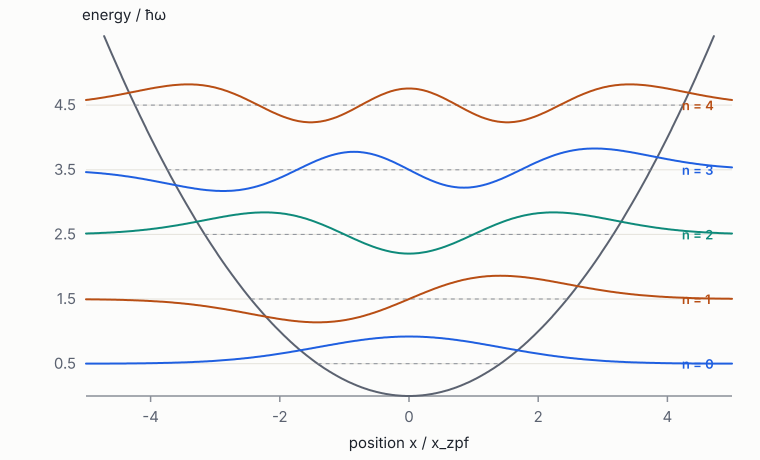
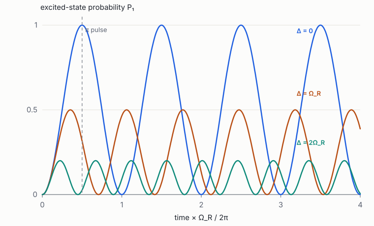
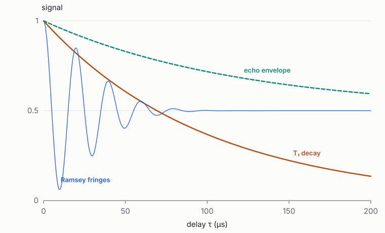

Foundations of Quantum Engineering · Book 3 of 7
Quantum Mechanics
States, measurement, dynamics, the harmonic oscillator, two-level systems, perturbation theory, entanglement and open systems
How to use this book
This book teaches quantum mechanics the way a quantum engineer uses it. It begins with the smallest quantum system, a two-level system or qubit, because almost every idea of the theory can be seen there with \(2\times2\) matrices. It then adds continuous systems (wavefunctions, tunnelling), the harmonic oscillator that describes every resonator and photon, the approximation methods that produce effective Hamiltonians, the density matrix that describes noisy and entangled systems, and the master equation that describes decoherence. It ends with second quantisation, the language of many identical particles, which Books 5 and 6 use for photons and superconductors.
The mathematics is that of Book 1, Chapters 1–5: complex numbers, Dirac notation, Hermitian and unitary operators, the matrix exponential and tensor products. The physics of Book 2, Chapters 1–3 (Hamiltonians, Poisson brackets and oscillators) is used from Chapter 3 on. If a step seems unmotivated, look for the classical analogue there first; the correspondence is close.
Units: we keep \(\hbar\) explicit in the early chapters and sometimes set \(\hbar = 1\) later, so that energies and angular frequencies are interchangeable. Frequencies quoted "in GHz" mean \(\omega/2\pi\).
1 Why quantum mechanics: experiments and the qubit
Goals
- Know the experiments that forced quantum theory: quantised energy, wave–particle duality and sequential spin measurements.
- See how the Stern–Gerlach experiment leads directly to complex two-dimensional state vectors.
- Understand superposition, interference and the role of measurement, before any formalism.
- Know the energy scales that decide when quantum effects are visible in engineered devices.
Quantum mechanics has a reputation for being weird, and it is: but it is weird in a very specific, precise way that a few experiments reveal. This chapter walks through those experiments without heavy mathematics. By the end you will have discovered for yourself the three ingredients of the theory: states are vectors with complex entries, probabilities come from squaring amplitudes, and measuring a system changes it. You will also meet the qubit, the simplest quantum system, and see why so many different pieces of hardware (atoms, photons, superconducting circuits) can all be qubits. The rest of the book turns these ideas into calculations.
1.1 Energy comes in packets
Around 1900, classical physics made a disastrous prediction. A hot oven is full of electromagnetic standing waves (modes). Classical statistical physics gives every mode an average energy \(k_BT\) (equipartition, Book 2, Chapter 8), and since there are infinitely many modes at ever higher frequencies, the oven should glow with infinite power in the ultraviolet. This "ultraviolet catastrophe" obviously does not happen.
Planck fixed it with a strange assumption: a mode of frequency \(\nu\) can only gain or lose energy in whole packets of size \(h\nu\), where \(h = 6.626\times10^{-34}\) J s is a new constant of nature (Planck's constant). A high-frequency mode then needs a big packet, which the thermal environment can rarely supply, so it stays almost empty. That is exactly the Bose–Einstein behaviour of Book 2 eq. (40), and it fits the measured glow perfectly.
The packets turned out to be real:
- Photoelectric effect (Einstein, 1905). Light shining on a metal ejects electrons only if its frequency is above a threshold, however intense the light. Explanation: light consists of photons, each of energy \(E = h\nu = \hbar\omega\) (with \(\hbar = h/2\pi\)). One photon kicks out one electron, and a low-frequency photon simply does not have enough energy, however many of them there are.
- Atomic spectra (Bohr, 1913). Hot hydrogen emits light only at sharp, specific colours. Explanation: the electron can only have certain energies, and it emits a photon whose energy is the difference between two of them.
In each case a quantity that classical physics treated as continuous turned out to be discrete: quantised.
When can we see this discreteness in an engineered device? When the spacing between energy levels, \(\hbar\omega\), is larger than both the thermal energy \(k_BT\) (otherwise heat blurs the levels together) and \(\hbar\gamma\), where \(\gamma\) is the loss rate (otherwise each level is broadened by its short lifetime). A 5 GHz superconducting resonator has \(\hbar\omega/k_B\approx 0.24\) K, so at 20 mK its levels are cleanly resolved; at 4 K they are washed out. An optical photon at 1550 nm has \(\hbar\omega/k_B\approx9300\) K and is quantum even at room temperature.
Why can't a very bright red lamp eject electrons from a metal that a dim ultraviolet lamp can?
Answer
Each red photon has too little energy (\(h\nu\) is below the threshold), and electrons absorb photons one at a time. Brightness only means more photons, not bigger ones. One ultraviolet photon carries enough energy on its own.
1.2 Waves and particles
The double-slit experiment shows the central mystery in its purest form. Send particles (electrons, photons, neutrons, even large molecules) one at a time toward a wall with two narrow slits, and record where each lands on a screen behind.
- Each particle arrives at a single point, like a particle. You never see half an electron.
- After many arrivals, the points build up a pattern of bright and dark fringes, like a wave that went through both slits and interfered with itself.
- Close one slit and the fringes disappear: you get a single smooth hump.
- Add a detector that records which slit each particle went through, even very gently, and the fringes disappear too.
Point 4 is the strangest. The particle is not "really" going through one slit while we don't look: if it were, closing the other slit would not change anything. The consistent description, due to de Broglie, Schrödinger and Born, is this. Assign the particle a complex number, an amplitude, for each possible path. Add the amplitudes for paths that end at the same point. The probability is the modulus squared of the sum:
The first two terms are what each slit alone would give. The third, the interference term, can be positive or negative depending on the relative phase of \(\psi_1\) and \(\psi_2\) (Book 1, Chapter 1): it makes bright fringes where the phases agree and dark fringes where they are opposite. Classical probability has no such term; probabilities are never negative.
Why does a which-path detector kill the fringes? Because it makes the two paths distinguishable: in principle you could look at the detector and know which way the particle went. The rule is:
The rule of amplitudes. For alternatives that are indistinguishable (nothing in the universe records which happened), add amplitudes, then square. For alternatives that are distinguishable, square each amplitude, then add the probabilities.
This one rule carries most of quantum mechanics. It is the key to the Hong–Ou–Mandel effect of Book 5, where two photons become indistinguishable and interfere, and to decoherence in Chapter 8, where the environment "records" a qubit's state and destroys its interference.
You do not need a person to look at the detector. Any physical record anywhere, even a single stray photon that scattered off the particle and flew away, makes the paths distinguishable. This is why quantum behaviour is so fragile at large scales: big objects are constantly being "recorded" by air molecules and light.
1.3 Stern–Gerlach and the qubit
Silver atoms behave like tiny bar magnets. In 1922 Stern and Gerlach sent a beam of them through a magnetic field that is stronger at the top than at the bottom. Such a field pushes a magnet up or down depending on how it is tilted: its magnetic moment's component along the field direction. Atoms come out of the oven with random orientations, so classically one expects a continuous vertical smear on the screen. Instead the beam split into exactly two spots, "up" and "down". The atom's magnetic moment along any chosen axis takes only two values.
Now chain the devices, as Sakurai does in his textbook [1]. Call a magnet oriented along \(z\) a "\(z\)-device", and rotate it to get an "\(x\)-device".
- Select the atoms that went up in a \(z\)-device, and send them into a second \(z\)-device. All go up. The measurement is repeatable: the atom "remembers" its answer.
- Select \(z\)-up atoms and send them into an \(x\)-device. Half go \(x\)-up and half \(x\)-down, at random.
- Select \(z\)-up, then from those the \(x\)-up atoms, and measure \(z\) again. Half now go \(z\)-down! The intermediate \(x\) measurement erased the \(z\) information.
Experiment 3 rules out the idea that each atom secretly carries definite values of both its \(z\) and \(x\) magnetisation. Measuring one disturbs the other.
Let us find the simplest mathematics that fits. Experiment 1 says "up" and "down" along \(z\) are perfectly distinguishable outcomes, so represent them as two perpendicular unit vectors, \(\ket{\uparrow_z}\) and \(\ket{\downarrow_z}\) (Book 1, Chapter 3, for the \(\ket{\,}\) notation): an orthonormal basis of a two-dimensional space. A general state is a combination \(\alpha\ket{\uparrow_z} + \beta\ket{\downarrow_z}\), and by the rule of amplitudes, the probability of finding it "up" is \(|\alpha|^2\).
Experiment 2 says \(\ket{\uparrow_x}\) has probability \(\tfrac12\) of being found \(z\)-up and \(\tfrac12\) of \(z\)-down. Its overlap with each basis vector has modulus squared \(\tfrac12\), so we can take
\[ \ket{\uparrow_x} = \frac{\ket{\uparrow_z}+\ket{\downarrow_z}}{\sqrt2}, \qquad \ket{\downarrow_x} = \frac{\ket{\uparrow_z}-\ket{\downarrow_z}}{\sqrt2}. \](These two are perpendicular, as they must be since \(x\)-up and \(x\)-down are distinguishable.) Experiment 3 now makes sense: \(\ket{\uparrow_x}\) is an equal mixture of \(z\)-up and \(z\)-down amplitudes, so measuring \(z\) gives each half the time.
Now add a \(y\)-device. Experiments show \(y\)-up has probability \(\tfrac12\) of each outcome in a \(z\)-device and in an \(x\)-device. So we need a third pair of states with overlap probability \(\tfrac12\) with all four states above. Try real coefficients: \((\ket{\uparrow_z}+\ket{\downarrow_z})/\sqrt2\) and \((\ket{\uparrow_z}-\ket{\downarrow_z})/\sqrt2\) are already taken, and no other real combination works (exercise 4). Complex coefficients succeed:
\[ \ket{\uparrow_y} = \frac{\ket{\uparrow_z}+\ii\ket{\downarrow_z}}{\sqrt2}, \qquad \ket{\downarrow_y} = \frac{\ket{\uparrow_z}-\ii\ket{\downarrow_z}}{\sqrt2}. \]This is the strongest elementary argument that quantum amplitudes must be complex numbers. Three perpendicular directions in space need three "mutually unbiased" pairs of states, and a two-dimensional space only has room for them if the entries are complex.
Any physical system with two distinguishable states and the ability to be in superpositions of them is a qubit:
- a spin in a magnetic field (spin qubits in silicon);
- the two lowest levels of an atom or ion (trapped ions, neutral atoms);
- a photon in one of two waveguides, or with one of two polarisations (photonic qubits);
- the two lowest energy levels of a superconducting circuit (transmons).
The mathematics is identical in every case, which is why quantum computing can be discussed without committing to hardware (Book 4), and why hardware can be compared on common terms (Book 6). The general qubit state \(\alpha\ket0 + \beta\ket1\), with the labels \(\ket0 = \ket{\uparrow_z}\) and \(\ket1 = \ket{\downarrow_z}\), is studied in the next chapter.
1.4 Scales and the limits of the classical picture
When does quantum mechanics matter? Planck's constant sets the scale: quantum effects appear when some "action" of a system (an energy times a time, or a momentum times a distance) is comparable to \(\hbar\approx1.05\times10^{-34}\) J s. For a thrown ball, the action is about \(10^{34}\) times larger and quantum effects are invisible. For an electron in an atom, the action is about \(\hbar\): fully quantum.
Engineered devices sit in between. A transmon contains about \(10^{11}\) electrons, yet it is fully quantum: its zero-point phase fluctuations are a few tenths of a radian (Book 2 eq. (12)). How? All the Cooper pairs move together as a single collective coordinate (the phase across the junction), and that one coordinate behaves like a single quantum particle. Engineering quantum devices is the art of three things:
- isolating one such collective coordinate from everything else;
- coupling it to controls, so we can drive and measure it;
- protecting it from an environment that constantly tries to "record" it (point 4 of the double slit).
Points 2 and 3 pull in opposite directions, and that tension runs through all of quantum hardware design.
1.5 Try it in Python
Simulate the three Stern–Gerlach experiments with random numbers. A measurement along an axis returns "up" with probability \(|\langle\text{up}|\psi\rangle|^2\) and leaves the atom in the state it was found in.
import numpy as np
rng = np.random.default_rng(1)
s = 1 / np.sqrt(2)
basis = { # (up, down) state vectors for each axis, in the z basis
"z": (np.array([1, 0]), np.array([0, 1])),
"x": (np.array([s, s]), np.array([s, -s])),
"y": (np.array([s, 1j * s]), np.array([s, -1j * s])),
}
def measure(psi, axis):
up, down = basis[axis]
p_up = abs(np.vdot(up, psi)) ** 2 # Born rule
if rng.random() < p_up:
return "up", up # the state collapses
return "down", down
def experiment(axes, N=10000):
"""Prepare z-up, then measure along each axis in turn, keeping only 'up'
results until the last device; report the fraction 'up' at the end."""
ups = total = 0
for _ in range(N):
psi = basis["z"][0]
for ax in axes[:-1]:
result, psi = measure(psi, ax)
if result != "up":
break
else:
result, _ = measure(psi, axes[-1])
total += 1
ups += result == "up"
return ups / total
print("z then z :", experiment(["z"]))
print("z then x :", experiment(["x"]))
print("z, x-up, z :", experiment(["x", "z"]))
print("z then y :", experiment(["y"]))You should see 1.0, then about 0.5, then about 0.5, then about 0.5. Try replacing the \(y\) states by real vectors and check that no choice gives 0.5 against both \(z\) and \(x\).
Every qubit technology in Book 6 is described, at the top level, by the same two-dimensional complex vector. A design tool can therefore share most of its software (simulation of gates, error models, calibration logic) across platforms, while the physical models underneath (circuit, atomic, photonic) differ. Getting the abstraction boundary right is a design choice the review discusses for EDA flows (Lab to Foundry §3.3).
- Energy is exchanged in packets \(\hbar\omega\); quantum effects are visible when \(\hbar\omega\) exceeds \(k_BT\) and \(\hbar\gamma\).
- Amplitudes for indistinguishable alternatives add, then are squared; the interference term is what classical probability lacks.
- Any record of which path was taken destroys interference.
- Stern–Gerlach: two outcomes, measurements disturb each other, and three axes need complex two-component vectors.
- A qubit is any two-level system that can be in superpositions; the mathematics is the same for every platform.
Exercises
- Compute the energy of one photon at 5 GHz and at 1550 nm in joules and in electronvolts, and the corresponding temperature \(E/k_B\).
Solution
5 GHz: \(E = 6.626\times10^{-34}\times5\times10^9 = 3.3\times10^{-24}\) J \(= 20.7\) µeV, \(E/k_B = 0.24\) K. 1550 nm: \(\nu = c/\lambda = 1.93\times10^{14}\) Hz, \(E = 1.28\times10^{-19}\) J \(= 0.80\) eV, \(E/k_B\approx9300\) K.
- Check that \(\ket{\uparrow_y} = (\ket{\uparrow_z}+\ii\ket{\downarrow_z})/\sqrt2\) has overlap probability \(\tfrac12\) with \(\ket{\uparrow_z}\), \(\ket{\downarrow_z}\), \(\ket{\uparrow_x}\) and \(\ket{\downarrow_x}\).
Solution
With \(\ket{\uparrow_z}\): \(1/\sqrt2\), probability \(\tfrac12\). With \(\ket{\downarrow_z}\): \(\ii/\sqrt2\), probability \(\tfrac12\). With \(\ket{\uparrow_x}\): \(\tfrac12(1+\ii)\), modulus squared \(\tfrac12\). With \(\ket{\downarrow_x}\): \(\tfrac12(1-\ii)\), modulus squared \(\tfrac12\).
- In a double slit, amplitudes at a point are \(\psi_1 = a\) and \(\psi_2 = a\,\ee^{\ii\phi}\). Find \(P\) as a function of \(\phi\). If a which-path detector randomises \(\phi\) uniformly, what is the average?
Solution
\(P = 2|a|^2(1+\cos\phi)\), oscillating between 0 and \(4|a|^2\). Averaging over random \(\phi\) gives \(2|a|^2\): the sum of the two single-slit probabilities, with no fringes. Randomised relative phase is exactly what decoherence does.
- Show that no real unit vector \((a, b)\) has overlap probability \(\tfrac12\) with all four states \(\ket{\uparrow_z},\ket{\downarrow_z},\ket{\uparrow_x},\ket{\downarrow_x}\) other than \(\pm\ket{\uparrow_x}\) or \(\pm\ket{\downarrow_x}\) themselves (which fail against \(x\)).
Solution
Against \(z\): \(a^2 = b^2 = \tfrac12\), so \(a,b = \pm1/\sqrt2\). Then the vector is \(\pm\ket{\uparrow_x}\) or \(\pm\ket{\downarrow_x}\), whose overlap probability with \(\ket{\uparrow_x}\) is 1 or 0, not \(\tfrac12\). So real amplitudes cannot describe a third axis.
- A thrown cricket ball (0.16 kg, 30 m/s) passes through a 1 m gap. Estimate its de Broglie wavelength \(\lambda = h/p\) and comment.
Solution
\(p = 4.8\) kg m/s, \(\lambda = 6.6\times10^{-34}/4.8\approx1.4\times10^{-34}\) m: about \(10^{-19}\) times the size of a proton. Interference fringes would be utterly unobservable, and the ball is also constantly "recorded" by air and light.
2 States, observables and measurement
Goals
- State the postulates of quantum mechanics and apply them to a qubit.
- Compute measurement probabilities, post-measurement states and expectation values.
- Picture any qubit state as a point on the Bloch sphere.
- Understand compatible and incompatible observables, and derive the uncertainty relation.
- Know the difference between global and relative phase, between superposition and mixture, and how imperfect detectors are described.
Chapter 1 discovered, from experiments, that states are complex vectors and probabilities are squared amplitudes. This chapter writes those discoveries down as five rules, the postulates, from which all of quantum mechanics follows. They use only the linear algebra of Book 1, Chapter 3: vectors, inner products, Hermitian matrices, eigenvalues and projectors. We apply every rule immediately to a qubit, so that by the end you can take any qubit state, predict what any measurement will give and how often, and picture the state as a point on a sphere.
2.1 The postulates
Read each postulate, then the plain-language comment after it.
Postulate 1 (states). The state of an isolated system is a unit vector \(\ket\psi\) in a complex Hilbert space \(\mathcal H\). Vectors differing only by a global phase, \(\ket\psi\) and \(\ee^{\ii\chi}\ket\psi\), describe the same state.
Comment. A "Hilbert space" is just a vector space with complex entries and an inner product; for a qubit it is \(\mathbb C^2\), pairs of complex numbers. "Unit" means \(\braket\psi\psi = 1\): probabilities will sum to one. Multiplying the whole vector by a phase \(\ee^{\ii\chi}\) changes no prediction, because every probability is a modulus squared.
Postulate 2 (observables). Every measurable quantity is represented by a Hermitian operator \(A\). The possible results of measuring it are its eigenvalues \(a_k\).
Comment. Hermitian matrices (\(A^\dagger = A\)) have real eigenvalues, and measurement results are real numbers, so that fits. The eigenvalues are the only possible results: measure the energy of an atom and you get one of its energy levels, never something in between. This is where quantisation comes from.
Postulate 3 (Born rule). If \(A = \sum_k a_kP_k\), with \(P_k\) the projector onto the eigenspace of \(a_k\), a measurement on \(\ket\psi\) gives \(a_k\) with probability
and immediately afterwards the state is \(P_k\ket\psi/\|P_k\ket\psi\|\) (the projection postulate).
Comment. In the common case where each eigenvalue has a single eigenvector \(\ket{a_k}\), the probability is simply the squared overlap between the state and that eigenvector: how much of \(\ket\psi\) "points along" \(\ket{a_k}\). After the measurement, the state becomes \(\ket{a_k}\) (this is the "collapse"), which is why repeating the measurement gives the same answer, as in Stern–Gerlach experiment 1.
Postulate 4 (dynamics). Between measurements, the state evolves by the Schrödinger equation \(\ii\hbar\,\dd\ket\psi/\dd t = H\ket\psi\), where the Hamiltonian \(H\) is the energy observable.
Comment. This is a linear differential equation (Book 1, Chapter 5), deterministic and smooth. Its solution is a unitary rotation of the state vector (Chapter 3). The Hamiltonian is the quantum version of the classical one from Book 2, Chapter 2.
Postulate 5 (composition). The state space of a composite system is the tensor product of the component spaces.
Comment. Two qubits live in \(\mathbb C^2\otimes\mathbb C^2 = \mathbb C^4\) (Book 1, Chapter 4). This rule is what makes entanglement possible, and why \(n\) qubits need \(2^n\) amplitudes. Chapter 7 develops it.
The probabilities in Postulate 3 sum to one because the projectors resolve the identity (Book 1 eq. (10)) and \(\ket\psi\) is normalised. The spectral theorem (Book 1 §3.4) guarantees that every Hermitian operator has such a decomposition, so every observable has a well-defined set of outcomes.
Two kinds of time evolution appear: smooth unitary evolution (Postulate 4) and abrupt collapse on measurement (Postulate 3). How they fit together is the famous "measurement problem". For engineering you need only the practical answer from Chapter 8: a measurement is an interaction that copies information into a large environment (a detector, an amplifier), and once copied, interference between outcomes is lost for good.
2.2 Measuring a qubit
Write the qubit's basis states as \(\ket0 = \binom10\) and \(\ket1 = \binom01\), and a general state as \(\ket\psi = \alpha\ket0+\beta\ket1\) with \(|\alpha|^2+|\beta|^2 = 1\). The three most important observables are the Pauli matrices (Book 1, Chapter 3):
\[ X = \begin{pmatrix}0&1\\1&0\end{pmatrix},\quad Y = \begin{pmatrix}0&-\ii\\ \ii&0\end{pmatrix},\quad Z = \begin{pmatrix}1&0\\0&-1\end{pmatrix}. \]Each has eigenvalues \(\pm1\). \(Z\)'s eigenvectors are \(\ket0\) (\(+1\)) and \(\ket1\) (\(-1\)); \(X\)'s are \(\ket\pm = (\ket0\pm\ket1)/\sqrt2\); \(Y\)'s are \(\ket{\pm\ii} = (\ket0\pm\ii\ket1)/\sqrt2\). These are exactly the \(z\), \(x\) and \(y\) states of Stern–Gerlach.
Worked example. Take \(\ket\psi = \tfrac{\sqrt3}{2}\ket0 + \tfrac12\ket1\).
- Measure \(Z\): result \(+1\) with probability \(|\braket0\psi|^2 = 3/4\), after which the state is \(\ket0\); result \(-1\) with probability \(1/4\), after which the state is \(\ket1\).
- Measure \(X\): \(\braket+\psi = \tfrac1{\sqrt2}(\tfrac{\sqrt3}2+\tfrac12) = 0.966\), probability 0.933; \(\braket-\psi = \tfrac1{\sqrt2}(\tfrac{\sqrt3}2-\tfrac12) = 0.259\), probability 0.067. They sum to 1.
- Change the relative phase: \(\ket{\psi'} = \tfrac{\sqrt3}{2}\ket0 - \tfrac12\ket1\). \(Z\) probabilities are unchanged (3/4, 1/4), but now \(X\) gives \(+1\) only 6.7% of the time.
The last point is crucial. In general, measuring \(X\) gives \(p(\pm) = |\braket{\pm}{\psi}|^2 = \tfrac12|\alpha\pm\beta|^2\), which depends on the relative phase of \(\alpha\) and \(\beta\), which \(Z\) measurements cannot see. A global phase multiplies both \(\alpha\) and \(\beta\) and is invisible; a relative phase is physical. A complete characterisation of an unknown state (state tomography) therefore needs measurements along several axes.
How many real numbers describe a qubit? Two complex numbers make four real numbers; normalisation removes one; global phase removes another. Two are left. It is conventional to write
which identifies each state with a point on a sphere, the Bloch sphere, at polar angle \(\theta\) (from the north pole) and azimuth \(\phi\) (around the equator). Landmarks:
- \(\ket0\) is the north pole (\(\theta = 0\)); \(\ket1\) the south pole (\(\theta = \pi\)).
- \(\ket\pm\) are on the equator along \(\pm x\) (\(\phi = 0, \pi\)); \(\ket{\pm\ii}\) along \(\pm y\) (\(\phi = \pm\pi/2\)).
- The relative phase \(\phi\) is longitude; the populations are set by latitude.
The point's Cartesian coordinates are the expectation values of the Pauli matrices, the Bloch vector \(\mathbf r = (\expval X, \expval Y, \expval Z) = (\sin\theta\cos\phi, \sin\theta\sin\phi, \cos\theta)\). Note that orthogonal states are antipodal on the sphere (\(\ket0\) and \(\ket1\) are opposite poles), not at right angles; the half-angles \(\theta/2\) in (3) are responsible. Chapter 5 shows that every single-qubit gate is a rotation of this sphere, which makes it the most useful picture in qubit engineering.
Where on the Bloch sphere is \((\ket0 - \ii\ket1)/\sqrt2\)?
Answer
On the equator (\(\theta = \pi/2\)) at \(\phi = -\pi/2\): pointing along \(-y\). It is the eigenvector of \(Y\) with eigenvalue \(-1\).
2.3 Expectation values and variance
A single measurement gives a random result. Repeat the experiment many times on identically prepared systems and average: the mean result is the expectation value
The second form, "sandwich \(A\) between the state and its conjugate", is usually the quickest to compute, and it follows from the first by writing \(A = \sum a_kP_k\). The uncertainty \(\Delta A\) is the standard deviation of the results (Book 1, Chapter 7).
Expectation values are what experiments estimate. For a qubit, \(\expval Z = |\alpha|^2 - |\beta|^2 = p_0 - p_1\). Each measurement ("shot") gives \(\pm1\), and the average of \(N\) shots has standard error \(\sqrt{(1-\expval Z^2)/N}\), so estimating \(\expval Z\) to precision \(\epsilon\) takes about \(1/\epsilon^2\) shots, by the binomial statistics of Book 1. A precision of 0.1% takes a million shots. That counting is behind the time and cost of calibrating and characterising large processors.
2.4 Compatible observables and the uncertainty relation
Two observables are compatible if they commute, \([A,B] = AB - BA = 0\). Commuting Hermitian operators share an eigenbasis (Book 1, Chapter 3), so both can have definite values at once, and measuring one does not disturb the other. Non-commuting observables cannot: no state is an eigenvector of both, so at least one of them must be uncertain. How uncertain? Apply the Cauchy–Schwarz inequality (Book 1 §2.2) to the vectors \((A-\expval A)\ket\psi\) and \((B-\expval B)\ket\psi\); after a few lines this gives the Robertson uncertainty relation:
Three applications, each important later:
- Position and momentum: \([x,p] = \ii\hbar\) gives Heisenberg's \(\Delta x\Delta p\ge\hbar/2\). A particle confined to a small box must have a spread of momenta, hence kinetic energy: this is why the ground state of an oscillator has zero-point energy (Chapter 4).
- Qubit: \([X,Y] = 2\ii Z\) gives \(\Delta X\Delta Y\ge|\expval Z|\). A state pointing along \(z\) must be maximally uncertain in \(x\) and \(y\).
- Circuit: \([\Phi,Q] = \ii\hbar\) (Book 2 eq. (10)). A superconducting island cannot have both a definite charge and a definite phase. The transmon is designed to sit in the regime where the phase is well defined and the charge is not, which makes it insensitive to stray charges (Book 6).
The uncertainty relation is not about clumsy measurement disturbing the system. It is a property of the state itself: there is simply no vector that is an eigenvector of both \(X\) and \(Z\). Just as a musical note cannot have both a perfectly sharp pitch and a perfectly short duration (Book 1, Chapter 6: a short pulse has a broad spectrum), a quantum state cannot have sharp values of non-commuting quantities.
2.5 Superposition is not ignorance
Beginners often think a superposition such as \(\ket+ = (\ket0+\ket1)/\sqrt2\) means "the qubit is really \(\ket0\) or \(\ket1\), we just don't know which". This is wrong, and the difference is measurable. Compare two preparations:
- Every qubit is prepared in \(\ket+\).
- Each qubit is randomly prepared in \(\ket0\) or \(\ket1\), with probability \(\tfrac12\) each, by flipping a coin. This is a statistical mixture.
Measured in the \(Z\) basis, both give 50:50 outcomes: indistinguishable so far. Measured in the \(X\) basis, preparation 1 gives \(+1\) every time (it is \(X\)'s eigenvector), while preparation 2 still gives 50:50 (each of \(\ket0\) and \(\ket1\) gives 50:50 in \(X\)). A superposition carries phase information that a mixture lacks. On the Bloch sphere, \(\ket+\) is a point on the surface; the mixture is the centre of the sphere.
Chapter 7 introduces the density matrix to describe both on equal footing; Chapter 8 shows how coupling to an environment turns superpositions into mixtures, which is decoherence, the main enemy of quantum computing.
2.6 Generalised measurements
Real detectors are not ideal projectors. A superconducting qubit readout has a small probability of reporting the wrong result; a photon detector misses some photons and occasionally clicks with no photon (a "dark count"). The general description assigns each outcome \(m\) a positive operator \(E_m\) with \(\sum_mE_m = I\) (a POVM, positive operator-valued measure), and \(p(m) = \bra\psi E_m\ket\psi\). Projectors are the special, ideal case.
For a qubit readout with assignment errors \(\epsilon_{01} = P(\text{"1"}\,|\,0)\) and \(\epsilon_{10} = P(\text{"0"}\,|\,1)\),
\[ E_{\text{"1"}} = \epsilon_{01}\ketbra00 + (1-\epsilon_{10})\ketbra11, \qquad E_{\text{"0"}} = I - E_{\text{"1"}}. \]Book 4 uses this to define readout fidelity, and Book 1's Bayes example was exactly this POVM. Knowing \(\epsilon_{01}\) and \(\epsilon_{10}\) lets you correct measured averages ("readout error mitigation").
2.7 Try it in Python
Do state tomography by simulation: measure \(X\), \(Y\) and \(Z\) with a finite number of shots, reconstruct the Bloch vector, and see the \(1/\sqrt N\) error.
import numpy as np
rng = np.random.default_rng(0)
X = np.array([[0, 1], [1, 0]])
Y = np.array([[0, -1j], [1j, 0]])
Z = np.array([[1, 0], [0, -1]])
theta, phi = 1.1, 0.7 # a state on the Bloch sphere
psi = np.array([np.cos(theta / 2), np.exp(1j * phi) * np.sin(theta / 2)])
exact = [np.vdot(psi, P @ psi).real for P in (X, Y, Z)]
def estimate(P, N):
"""Measure observable P N times; return the average of the +-1 results."""
vals, vecs = np.linalg.eigh(P)
probs = np.abs(vecs.conj().T @ psi) ** 2 # Born rule for each eigenvalue
return rng.choice(vals, size=N, p=probs).mean()
print("exact Bloch vector:", np.round(exact, 4))
for N in (100, 10_000, 1_000_000):
est = [estimate(P, N) for P in (X, Y, Z)]
err = np.linalg.norm(np.array(est) - exact)
print(f"N = {N:>9,}: estimate {np.round(est, 4)} error {err:.4f}")Each factor of 100 in shots buys a factor of 10 in accuracy.
Measurement statistics set the cost of test. Every number a characterisation flow reports (a frequency, a \(T_1\), a gate fidelity) is an estimate from finitely many projective measurements, with a binomial uncertainty that scales as \(1/\sqrt{\text{shots}}\). Choosing which measurements to make, and how many shots to spend, is an experimental-design problem (Lab to Foundry eq. (30)).
- States are unit complex vectors (global phase irrelevant); observables are Hermitian; results are eigenvalues.
- Born rule: probability = squared overlap with the eigenvector; the state then becomes that eigenvector.
- A qubit state is a point on the Bloch sphere, coordinates \((\expval X,\expval Y,\expval Z)\); relative phase is longitude.
- \(\expval A = \bra\psi A\ket\psi\); estimating it to \(\epsilon\) costs about \(1/\epsilon^2\) shots.
- \(\Delta A\Delta B\ge\tfrac12|\expval{[A,B]}|\): no state has sharp values of non-commuting observables.
- Superposition differs measurably from a mixture; real detectors are POVMs.
Exercises
- For \(\ket\psi = \tfrac{1}{\sqrt3}\ket0 + \sqrt{\tfrac23}\,\ee^{\ii\pi/4}\ket1\), compute the probabilities of \(Z = \pm1\), \(X=\pm1\), and the Bloch vector.
Solution
\(p(Z{=}{+}1) = 1/3\), \(p(Z{=}{-}1) = 2/3\). \(\expval X = 2\Re(\alpha^*\beta) = 2\cdot\tfrac{1}{\sqrt3}\sqrt{\tfrac23}\cos\tfrac\pi4 = \tfrac{2}{3}\), so \(p(X{=}{+}1) = (1+\expval X)/2 = 5/6\). \(\expval Y = 2\Im(\alpha^*\beta) = 2/3\), \(\expval Z = -1/3\). Bloch vector \((2/3, 2/3, -1/3)\), unit length as it must be.
- Show that \(\expval X = 2\Re(\alpha^*\beta)\) and \(\expval Y = 2\Im(\alpha^*\beta)\) for \(\alpha\ket0+\beta\ket1\).
Solution
\(X\ket\psi = \beta\ket0+\alpha\ket1\), so \(\expval X = \alpha^*\beta + \beta^*\alpha = 2\Re(\alpha^*\beta)\). \(Y\ket\psi = -\ii\beta\ket0 + \ii\alpha\ket1\), so \(\expval Y = -\ii\alpha^*\beta + \ii\beta^*\alpha = 2\Im(\alpha^*\beta)\).
- Verify the uncertainty relation \(\Delta X\Delta Y\ge|\expval Z|\) for \(\ket0\) and for \(\ket+\).
Solution
For \(\ket0\): \(\expval X = \expval Y = 0\), \(\expval{X^2} = \expval{Y^2} = 1\), so \(\Delta X = \Delta Y = 1\), product 1, and \(|\expval Z| = 1\): equality. For \(\ket+\): \(\Delta X = 0\), \(\Delta Y = 1\), product 0, and \(\expval Z = 0\): satisfied.
- A readout has \(\epsilon_{01} = 0.02\) and \(\epsilon_{10} = 0.05\). For a qubit prepared in \(\ket+\), what is the probability of reporting "1"?
Solution
\(p(\text{"1"}) = 0.02\times\tfrac12 + 0.95\times\tfrac12 = 0.485\). Assignment errors bias the estimate of \(\expval Z\) unless corrected.
- How many shots are needed to estimate \(\expval Z\) of the state \(\ket+\) to a standard error of 0.01?
Solution
For \(\ket+\), \(\expval Z = 0\) and each shot has variance 1. Standard error \(1/\sqrt N = 0.01\) needs \(N = 10^4\) shots.
- Show that \(\ket\psi\) and \(-\ket\psi\) give identical probabilities for every measurement, but \(\ket0+\ket1\) and \(\ket0-\ket1\) do not.
Solution
\(|\braket{a}{-\psi}|^2 = |-\braket a\psi|^2 = |\braket a\psi|^2\) for every \(\ket a\): a global phase of \(-1\). For the second pair the sign is relative; measuring \(X\) gives \(+1\) with certainty for one and \(-1\) for the other.
3 Dynamics, wavefunctions and tunnelling
Goals
- Solve the Schrödinger equation with the time-evolution operator and energy eigenstates.
- Use the Schrödinger, Heisenberg and interaction pictures, and know when each is convenient.
- Work with wavefunctions: the particle in a box, the finite well and the free particle.
- Compute tunnelling through a barrier and see why junction properties depend exponentially on barrier thickness.
Chapter 2 said what a state is and what a measurement does. This chapter is about what happens in between: how a state changes in time. The answer is a single equation, Schrödinger's, and for most problems in quantum hardware its solution is a recipe you can carry out by hand or in a few lines of code: find the energy levels, give each a rotating phase, add them up. The second half applies the same equation to particles moving in space, which brings out two purely quantum effects that matter enormously for devices: confinement (a trapped particle can only have certain energies, the basis of quantum dots) and tunnelling (a particle can pass through a wall it classically cannot climb, the basis of every Josephson junction).
3.1 The time-evolution operator
For a time-independent Hamiltonian, the Schrödinger equation \(\ii\hbar\,\dd\ket\psi/\dd t = H\ket\psi\) is a linear system of the form \(\dot{\mathbf x} = A\mathbf x\), which Book 1 solved with the matrix exponential (Book 1 eq. (29)). So
where the energy eigenstates satisfy \(H\ket{E_n} = E_n\ket{E_n}\), the time-independent Schrödinger equation. The second form follows from the spectral decomposition of \(H\) (a function of a Hermitian matrix acts on each eigenvalue separately). In words, the recipe is:
- Find the energy eigenstates \(\ket{E_n}\) and energies \(E_n\) (diagonalise \(H\)).
- Expand the initial state: \(\ket{\psi(0)} = \sum_nc_n\ket{E_n}\), with \(c_n = \braket{E_n}{\psi(0)}\).
- Attach a rotating phase to each: \(c_n\to c_n\ee^{-\ii E_nt/\hbar}\).
- Add up: \(\ket{\psi(t)} = \sum_nc_n\ee^{-\ii E_nt/\hbar}\ket{E_n}\).
Several important facts follow.
- Stationary states. An energy eigenstate only acquires an overall phase, which is unobservable. All its measurable properties are constant in time. That is why atoms in their ground state do not radiate, and why a qubit left in \(\ket0\) stays there (in the absence of noise).
- Bohr frequencies. Anything that changes in time does so through interference between eigenstates of different energy, at the frequencies \((E_n - E_m)/\hbar\). These are exactly the frequencies at which the system absorbs or emits light, and the frequencies at which a qubit precesses.
- Unitarity. Because \(H\) is Hermitian, \(U\) is unitary (\(U^\dagger U = I\)), so the norm, and hence total probability, is conserved.
Worked example: a precessing qubit. A qubit with energy splitting \(\hbar\omega_q\) starts in \((\ket0+\ket1)/\sqrt2\). The two components acquire phases at rates differing by \(\omega_q\), so the relative phase \(\phi\) on the Bloch sphere (Chapter 2) advances steadily: the Bloch vector rotates around the \(z\) axis at the qubit frequency, \(\expval{X}(t) = \cos\omega_qt\) (exercise 1). For a 5 GHz qubit that is five billion turns per second. This is the "free precession" that every qubit control system must keep track of, usually by working in a frame rotating at \(\omega_q\) (Chapter 5).
When \(H\) depends on time (a qubit under a control pulse), \(U\) is the solution of \(\ii\hbar\,\dot U = H(t)U\) with \(U(0)=I\). If the Hamiltonians at different times do not commute, \(U\) is not simply \(\ee^{-\ii\int H\dd t/\hbar}\): the order in which things happen matters, just as rotating a book first about \(x\) then about \(y\) gives a different result from the reverse order. \(U\) is then a time-ordered exponential, computed numerically by multiplying many short steps, latest on the left:
\[ U \approx \ee^{-\ii H(t_K)\Delta t/\hbar}\cdots\ee^{-\ii H(t_2)\Delta t/\hbar}\,\ee^{-\ii H(t_1)\Delta t/\hbar}. \]Pulse-level simulators do exactly this.
3.2 Pictures
The measurable quantities are expectation values, \(\bra{\psi(t)}A\ket{\psi(t)} = \bra{\psi(0)}U^\dagger AU\ket{\psi(0)}\). The bracketing can be read two ways:
- Schrödinger picture: states move, \(\ket{\psi(t)} = U\ket{\psi(0)}\); operators stay fixed. Natural for simulation.
- Heisenberg picture: states stay fixed; operators move, \(A_H(t) = U^\dagger AU\). Natural for comparing with classical physics, because operators then obey equations resembling the classical ones.
Differentiating \(A_H(t)\) gives the Heisenberg equation of motion, the quantum version of Book 2's \(\dot f = \{f,H\}\) with the Poisson bracket replaced by a commutator:
An immediate consequence: anything that commutes with \(H\) is conserved. In particular \(H\) itself (energy).
Taking expectation values gives Ehrenfest's theorem: for \(H = p^2/2m+V(x)\), \(\dd\expval x/\dd t = \expval p/m\) and \(\dd\expval p/\dd t = -\expval{V'(x)}\). These look like Newton's laws for the average position and momentum. They are exactly Newton's laws only if \(\expval{V'(x)} = V'(\expval x)\), which holds when the wavepacket is narrow compared with the scale on which the force varies, or when the force is linear in \(x\). For harmonic systems (\(V\propto x^2\), \(V'\) linear) it is exact, and that is why oscillators, and the linear circuits of Book 2, behave so classically: a resonator's average voltage obeys the classical circuit equations exactly.
The interaction picture is a compromise for \(H = H_0 + V(t)\), where \(H_0\) is simple and \(V\) small or slow. Remove the fast, known evolution due to \(H_0\) by defining \(\ket{\tilde\psi} = \ee^{\ii H_0t/\hbar}\ket\psi\). Then
\[ \ii\hbar\frac{\dd\ket{\tilde\psi}}{\dd t} = \tilde V(t)\ket{\tilde\psi}, \qquad \tilde V = \ee^{\ii H_0t/\hbar}V\ee^{-\ii H_0t/\hbar}. \]Only the interesting part, \(V\), drives the change. It is the quantum version of the rotating frame (Book 1 §1.4, and the classical rotating frame of Book 2, Chapter 2) and the starting point of perturbation theory (Chapter 6) and of the Rabi problem (Chapter 5).
3.3 Wavefunctions
So far our state spaces were finite (two dimensions for a qubit). A particle moving along a line can be anywhere, so it needs a basis vector \(\ket x\) for every position \(x\): an infinite-dimensional space. The components of the state in this basis form the wavefunction \(\psi(x) = \braket x\psi\), and by the Born rule \(|\psi(x)|^2\) is the probability density: the probability of finding the particle between \(x\) and \(x+\dd x\) is \(|\psi(x)|^2\dd x\). Normalisation becomes \(\int|\psi|^2\dd x = 1\).
In this language the momentum operator is a derivative, \(p = -\ii\hbar\,\dd/\dd x\) (one checks that it satisfies \([x,p] = \ii\hbar\)), and with \(H = p^2/2m + V(x)\) the time-independent Schrödinger equation becomes a differential equation:
Read it as: "kinetic energy (curvature of \(\psi\)) plus potential energy equals total energy". Where \(E\gt V\) the solution curves back toward zero and oscillates; where \(E\lt V\) (classically forbidden) it curves away and grows or decays exponentially.
The free particle. With \(V = 0\), plane waves \(\ee^{\ii kx}\) solve it. They are momentum eigenstates with \(p = \hbar k\) and energy \(E = \hbar^2k^2/2m\). Since \(k = 2\pi/\lambda\), this is de Broglie's relation \(\lambda = h/p\): every particle has a wavelength.
The particle in a box. Now confine the particle between infinitely high walls at \(x = 0\) and \(x = L\). It cannot be in the walls, so \(\psi = 0\) there. Inside, \(\psi\) is a combination of \(\ee^{\pm\ii kx}\), and vanishing at both ends forces a standing wave with a whole number of half-wavelengths in the box: \(\psi_n = \sqrt{2/L}\sin(n\pi x/L)\) (the functions of Book 1 §2, and the guitar string of Book 2). The allowed energies are
Three lessons, all general:
- Confinement quantises energy. A free particle can have any energy; a trapped one only specific values.
- Zero-point energy. The lowest energy is not zero. A confined particle has uncertain momentum (\(\Delta p\gtrsim\hbar/L\), Chapter 2), and uncertain momentum means kinetic energy.
- Smaller boxes, larger spacings, as \(1/L^2\); lighter particles, larger spacings, as \(1/m\).
A quantum dot is a box a few tens of nanometres across in a semiconductor, with level spacings of meV, and a gate-defined spin qubit is an electron in such a box (Book 6).
The finite well. Real walls have finite height \(V_0\). Inside the wall (\(E\lt V_0\)) the wavefunction does not vanish but decays as \(\ee^{-\kappa|x|}\), with
\[ \kappa = \sqrt{2m(V_0-E)}/\hbar . \]The particle "leaks" a distance \(1/\kappa\) into the classically forbidden region. The bound states are found by matching \(\psi\) and \(\psi'\) at the edges, which gives a transcendental equation with a finite number of solutions: a shallow well has few bound states, at least one. The same mathematics describes the modes of an optical slab waveguide (Book 2 eq. (35)), where the "leak" is the evanescent field.
3.4 Tunnelling
Send a particle of energy \(E\) at a barrier of height \(U \gt E\) and thickness \(d\). Classically it is reflected, always: it does not have the energy to climb over. Quantum mechanically, the wavefunction inside the barrier decays as \(\ee^{-\kappa x}\) but does not vanish, and if the barrier is thin, some amplitude survives to the far side, where it continues as a travelling wave. Matching \(\psi\) and \(\psi'\) at both interfaces gives a transmission probability which, for a thick or high barrier (\(\kappa d\gg1\)), is
The prefactor is of order one; everything important is in the exponential. (The factor 2 appears because probability is amplitude squared.) For an electron and a barrier 1 eV above its energy, \(\kappa\approx5.1\) nm\(^{-1}\), so each extra ångström (0.1 nm) of barrier reduces \(T\) by a factor \(\ee^{-1.02}\approx0.36\).
This exponential sensitivity is the central fact of Josephson-junction manufacture. A junction is two superconductors separated by about 1–2 nm of aluminium oxide; its normal-state resistance \(R_n\propto1/T\) and critical current \(I_c\propto1/R_n\) depend exponentially on the oxide thickness (Lab to Foundry eq. (14)). A fluctuation of a fraction of an ångström across a wafer becomes a percent-level spread in junction energy and a tens-of-MHz spread in qubit frequency (Lab to Foundry §4.1).
Worked example: barrier sensitivity. Two junctions differ in average oxide thickness by \(\delta d = 0.02\) nm. Using \(\kappa = 5\) nm\(^{-1}\), \(I_c\propto\ee^{-2\kappa d}\) differs by a factor \(\ee^{-2\times5\times0.02} = \ee^{-0.2} = 0.82\): an 18% change from a variation of one tenth of an atomic diameter. Since the transmon frequency scales as \(\sqrt{E_J}\propto\sqrt{I_c}\), the qubits differ by about 9%, roughly 450 MHz at 5 GHz. In practice the oxide is not uniform at this scale and the current flows through the thinnest spots, so junctions average over many of them; spreads of 1–3% are achieved, but only through careful statistical process control (Book 7).
Tunnelling appears in quantum hardware in three roles:
- As a building block: the Josephson junction (Cooper pairs tunnelling through an oxide).
- As a design element: the exchange coupling between two spin qubits is set by electrons tunnelling between neighbouring dots, and is exponential in the gate voltage that controls the barrier, which makes it switchable over orders of magnitude.
- As a loss mechanism: two-level systems in amorphous oxides are atoms tunnelling between two nearby positions, absorbing microwave photons (Book 6).
If a barrier's height above the particle energy is quadrupled, by what factor does \(\kappa\) change?
Answer
\(\kappa\propto\sqrt{U-E}\), so it doubles, and the tunnelling exponent \(2\kappa d\) doubles too: thickness and height both matter, but thickness enters linearly and height only as a square root.
3.5 Try it in Python
Solve the particle in a box as a matrix eigenvalue problem (finite differences turn \(\psi''\) into a tridiagonal matrix), then compare the exact and approximate tunnelling probabilities.
import numpy as np
from scipy.linalg import eigh_tridiagonal
hbar, me, eV = 1.054571817e-34, 9.1093837e-31, 1.602176634e-19
# 1) Particle in a box by finite differences: -hbar^2/2m psi'' = E psi
L, N = 30e-9, 2000
m = 0.19 * me # electron in silicon
h = L / (N + 1) # interior grid, psi = 0 at walls
diag = np.full(N, hbar**2 / (m * h**2))
off = np.full(N - 1, -hbar**2 / (2 * m * h**2))
E = eigh_tridiagonal(diag, off, select="i", select_range=(0, 3))[0]
exact = [(hbar * np.pi * n) ** 2 / (2 * m * L**2) for n in range(1, 5)]
for n in range(4):
print(f"box level {n+1}: numerical {E[n]/eV*1e3:6.3f} meV, formula {exact[n]/eV*1e3:6.3f} meV")
# 2) Tunnelling through a rectangular barrier: exact versus the thick-barrier formula
Ee, U = 1.0 * eV, 2.0 * eV
kappa = np.sqrt(2 * me * (U - Ee)) / hbar
print(f"kappa = {kappa*1e-9:.2f} per nm")
for d_nm in (0.5, 1.0, 1.5, 2.0):
d = d_nm * 1e-9
T_exact = 1 / (1 + U**2 * np.sinh(kappa * d) ** 2 / (4 * Ee * (U - Ee)))
T_approx = 16 * Ee * (U - Ee) / U**2 * np.exp(-2 * kappa * d)
print(f"d = {d_nm} nm: T exact {T_exact:.3e}, approx {T_approx:.3e}")The numerical levels match (9) to four digits. Each extra 0.5 nm of barrier divides the transmission by about 170, and the simple formula (10) is already excellent at 0.5 nm.
Pulse-level simulation (solving \(\ii\hbar\dot U = H(t)U\) for a few coupled transmons) is how gate designs are checked before fabrication and how calibration software builds its models. Its inputs are the Hamiltonian parameters that extraction provides; its outputs are gate errors that feed the error-correction model (Lab to Foundry eq. (37)). The tunnelling formula (10) is the link between a process parameter (oxide thickness) and a design parameter (\(E_J\)).
- \(U = \ee^{-\ii Ht/\hbar}\): expand in energy eigenstates, give each a phase \(\ee^{-\ii E_nt/\hbar}\), add up.
- Eigenstates are stationary; dynamics happens at Bohr frequencies \((E_n-E_m)/\hbar\); time-dependent \(H\) needs a time-ordered product.
- Heisenberg picture: \(\dot A = \frac{\ii}{\hbar}[H,A]\); averages follow Newton exactly for harmonic systems.
- Interaction picture removes the known fast motion (the rotating frame).
- Confinement quantises energy, \(E_n\propto n^2/mL^2\), with zero-point energy.
- Tunnelling \(T\sim\ee^{-2\kappa d}\): exponential in barrier thickness, hence the spread of junction parameters.
Exercises
- A qubit has \(H = \tfrac{\hbar\omega_q}{2}\,Z\) (with \(\ket0\) the upper level in this sign convention) and starts in \(\ket+\). Find \(\ket{\psi(t)}\) and \(\expval X(t)\), \(\expval Y(t)\).
Solution
\(U = \mathrm{diag}(\ee^{-\ii\omega_qt/2}, \ee^{\ii\omega_qt/2})\), so \(\ket{\psi(t)} = (\ee^{-\ii\omega_qt/2}\ket0 + \ee^{\ii\omega_qt/2}\ket1)/\sqrt2\). Then \(\alpha^*\beta = \tfrac12\ee^{\ii\omega_qt}\), so \(\expval X = \cos\omega_qt\), \(\expval Y = \sin\omega_qt\): precession about \(z\) at \(\omega_q\).
- Use (7) to show that for \(H = p^2/2m + \tfrac12m\omega^2x^2\), \(\ddot x_H = -\omega^2x_H\).
Solution
\([H,x] = [p^2,x]/2m = -\ii\hbar p/m\), so \(\dot x_H = p_H/m\). \([H,p] = \tfrac12m\omega^2[x^2,p] = \ii\hbar m\omega^2x\), so \(\dot p_H = -m\omega^2x_H\). Combining, \(\ddot x_H = -\omega^2x_H\): the operators obey the classical equation exactly.
- Estimate the ground-state energy of an electron (effective mass \(0.19m_e\) in silicon) in a 30 nm box, in meV and as a temperature.
Solution
\(E_1 = \hbar^2\pi^2/(2m^*L^2) = (1.055\times10^{-34})^2\times9.87/(2\times0.19\times9.11\times10^{-31}\times9\times10^{-16})\approx3.5\times10^{-22}\) J \(\approx 2.2\) meV \(\approx 25\) K. Level spacings of a few meV keep a dot's orbital states frozen out at millikelvin temperatures.
- An oxide barrier has \(U - E = 2\) eV. By what factor does tunnelling change if the thickness increases by 0.1 nm? (Use the free-electron mass.)
Solution
\(\kappa = \sqrt{2\times9.11\times10^{-31}\times3.2\times10^{-19}}/1.055\times10^{-34}\approx7.2\) nm\(^{-1}\). Factor \(\ee^{-2\times7.2\times0.1} = \ee^{-1.44}\approx0.24\).
- A three-level system has energies \(0\), \(\hbar\omega\), \(3\hbar\omega\). At which frequencies can \(\expval A(t)\) oscillate for a generic observable and initial state?
Solution
At the Bohr frequencies: \(\omega\), \(2\omega\) and \(3\omega\) (the differences between pairs of levels).
- Show that \(p = -\ii\hbar\,\dd/\dd x\) satisfies \([x,p]\psi = \ii\hbar\psi\) for any \(\psi\).
Solution
\(xp\psi = -\ii\hbar x\psi'\); \(px\psi = -\ii\hbar(x\psi)' = -\ii\hbar(\psi + x\psi')\). Subtracting: \([x,p]\psi = \ii\hbar\psi\).
4 The quantum harmonic oscillator
Goals
- Solve the harmonic oscillator algebraically with ladder operators, and know its spectrum and eigenstates.
- Quantise an LC circuit and compute its zero-point fluctuations.
- Understand coherent states, the displacement operator and why a classically driven oscillator stays coherent.
- Add a weak nonlinearity and see the spectrum become anharmonic, the first step towards a qubit.
If you learn one quantum system thoroughly, make it the harmonic oscillator. It describes a mass on a spring, but also an LC circuit, a microwave resonator, every mode of light in a cavity or waveguide, and the vibrations of atoms in a crystal. A superconducting qubit is a harmonic oscillator with a small nonlinearity added, and its readout resonator is a harmonic oscillator with none. The solution is short and elegant: two operators, \(a\) and \(a^\dagger\), that remove or add one quantum of energy. Everything in Books 5 and 6 about photons and circuit qubits is written in their language.
4.1 Ladder operators
The Hamiltonian \(H = p^2/2m + \tfrac12m\omega^2x^2\) describes a mass on a spring, an LC circuit (with \(x\to\Phi\), \(p\to Q\), \(m\to C\), Book 2, Chapter 1), a mode of a cavity, and the small oscillations of almost any system near equilibrium (expand any smooth potential to second order around its minimum). Rather than solve a differential equation, we use a trick from Book 2, Chapter 2: combine position and momentum into one complex variable. Define
Classically this was the rotating phasor \(\alpha\); quantum mechanically it is an operator, and since \(x\) and \(p\) do not commute, neither do \(a\) and \(a^\dagger\). From \([x,p] = \ii\hbar\) follows (exercise 1) the single most-used relation in quantum optics and circuit QED:
\[ [a,a^\dagger] = 1 . \]Substituting \(x\) and \(p\) in terms of \(a\) and \(a^\dagger\) into \(H\), the Hamiltonian becomes
where \(\hat n = a^\dagger a\) is called the number operator. Finding the energies is now finding the eigenvalues of \(\hat n\), and that follows from the commutator alone, in four steps:
- From \([a,a^\dagger] = 1\): \([\hat n, a^\dagger] = a^\dagger\) and \([\hat n, a] = -a\).
- If \(\hat n\ket n = n\ket n\), then \(\hat n(a^\dagger\ket n) = (a^\dagger\hat n + a^\dagger)\ket n = (n+1)\,a^\dagger\ket n\). So \(a^\dagger\ket n\) is an eigenvector with eigenvalue \(n+1\). Likewise \(a\ket n\) has eigenvalue \(n-1\). The operators climb and descend a ladder of states, one rung at a time: \(a^\dagger\) is the raising (creation) operator, \(a\) the lowering (annihilation) operator.
- The eigenvalues cannot be negative: \(\bra\psi\hat n\ket\psi = \bra\psi a^\dagger a\ket\psi = \|a\ket\psi\|^2\ge0\). So descending cannot go on forever; it must stop at a state that \(a\) destroys entirely: \(a\ket0 = 0\). That is the ground state, with \(n = 0\).
- Climbing from \(\ket0\) gives \(n = 0,1,2,\dots\). Fixing normalisation:
The states \(\ket n\) are number or Fock states: \(n\) quanta of energy \(\hbar\omega\) each, on top of the zero-point energy \(\hbar\omega/2\). For a mode of the electromagnetic field, the quanta are photons and \(a^\dagger\) creates one; for a mechanical oscillator they are phonons. The \(\sqrt{n}\) factors are not decoration: they mean it is easier to add a photon to a mode that already has many ("stimulated emission", the principle of the laser).
The levels are equally spaced, by \(\hbar\omega\). That is fatal for a qubit: a drive at \(\omega\) that excites \(0\to1\) also excites \(1\to2\), \(2\to3\) and so on, and the state wanders up the ladder. A harmonic oscillator cannot be used as a qubit; we need to break the equal spacing (the last section of this chapter).
The ground-state wavefunction follows from \(a\ket0 = 0\). In the position representation (Chapter 3) this is a first-order differential equation, \((x + \frac{\hbar}{m\omega}\frac{\dd}{\dd x})\psi_0 = 0\), whose solution is a Gaussian, \(\psi_0(x)\propto\ee^{-x^2/4x_{\mathrm{zpf}}^2}\), with zero-point width
The second and third relations, obtained by inverting (11), are what you use in practice: any function of \(x\) and \(p\) can be rewritten with ladder operators. Excited states are Gaussians times Hermite polynomials, with \(n\) nodes (Figure 1).

Think of \(\ket n\) as "exactly \(n\) photons in the box". The ground state \(\ket0\) is the vacuum: no photons, but not nothing. Its position (or flux, or electric field) still fluctuates by \(x_{\mathrm{zpf}}\), because pinning it exactly would require infinite momentum uncertainty (Chapter 2). These vacuum fluctuations are real and measurable: they cause spontaneous emission, the Lamb shift, and part of the noise in every quantum amplifier.
4.2 Quantising an LC circuit
The translation from mechanics to circuits (Book 2) is \(x\to\Phi\), \(p\to Q\), \(m\to C\), \(\omega = 1/\sqrt{LC}\), and the circuit's characteristic impedance \(Z = \sqrt{L/C}\) plays the role of \(1/m\omega\). Substituting into (14):
This is the result promised in Book 2 (Book 2 eq. (12)). An LC circuit at millikelvin temperatures is a quantum harmonic oscillator, and its energy quanta are microwave photons.
The voltage on the capacitor, \(V = Q/C\), fluctuates even in the ground state, with rms value
\[ V_{\mathrm{zpf}} = \frac{Q_{\mathrm{zpf}}}{C} = \omega\sqrt{\frac{\hbar Z}{2}} , \]about 1–2 µV for a 5–6 GHz, 50 Ω resonator (exercise 4). That tiny voltage, acting on a qubit through a coupling capacitor, is what couples a qubit to a single photon in a resonator. The coupling strength \(g\) is proportional to it (Book 6), which is why high-impedance resonators couple more strongly to charge-sensitive qubits.
Worked example: how many photons is a readout tone? A readout resonator at 7 GHz with \(\kappa/2\pi = 1\) MHz is driven by an incoming power \(P\). In steady state on resonance the photon number is \(\bar n = 4P/(\hbar\omega\kappa)\) for a resonator whose loss is all through its one port (from Book 2's input–output equations with \(\kappa_e = \kappa\)). For \(\bar n = 10\) photons, \(P = 10\times\hbar\omega\kappa/4 = 10\times(4.6\times10^{-24})\times(6.3\times10^6)/4\approx7\times10^{-17}\) W, about \(-130\) dBm. Readout signals are indeed this faint, which is why the amplifier chain of Book 2, Chapter 8 matters.
4.3 Coherent states
Fock states are very non-classical. In \(\ket n\) the average position is zero, \(\bra n x\ket n = 0\) for every \(n\), because \(x\propto a + a^\dagger\) changes \(n\) by one. A Fock state has a definite energy but no definite phase: it does not "swing". So which quantum states look like a classical oscillator swinging back and forth? They are the coherent states, eigenstates of the annihilation operator:
Their properties:
- A displaced vacuum. \(\ket\alpha\) is the ground-state Gaussian, shifted in phase space to \(\expval x = 2x_{\mathrm{zpf}}\Re\alpha\), \(\expval p = 2m\omega x_{\mathrm{zpf}}\Im\alpha\). The operator \(D(\alpha)\) that does the shifting is the displacement operator. The width stays \(x_{\mathrm{zpf}}\): the quantum fuzz is the same as the vacuum's.
- Classical motion. It evolves as \(\ket{\alpha\ee^{-\ii\omega t}}\): the displaced Gaussian circles in phase space without spreading, exactly like the classical phasor of Books 1 and 2.
- Poisson photon statistics. The probability of \(n\) photons is \(\ee^{-\bar n}\bar n^n/n!\) with mean \(\bar n = |\alpha|^2\) and standard deviation \(\sqrt{\bar n}\): the shot noise of a laser or a microwave generator.
- What classical sources make. A classical current or voltage source driving an oscillator, \(H_d = \hbar(\epsilon(t)a^\dagger + \epsilon^*(t)a)\), always produces a coherent state from the vacuum. Producing Fock states, superpositions of them, or squeezed states requires a nonlinearity or a measurement (Book 5).
For large \(|\alpha|\) the relative fuzz \(1/|\alpha|\) is tiny and the state is indistinguishable from a classical oscillation. That is the bridge between the quantum oscillator and the classical circuits of Book 2.
A coherent state has \(\alpha = 3\ii\). What are \(\bar n\) and the standard deviation of the photon number?
Answer
\(\bar n = |\alpha|^2 = 9\); standard deviation \(\sqrt9 = 3\). The phase of \(\alpha\) does not affect the photon statistics.
4.4 Adding a nonlinearity
To make a qubit we must break the equal spacing. Suppose the potential has a small quartic correction, as for a pendulum or a Josephson junction (Book 2, Chapter 3): \(V = \tfrac12m\omega^2x^2 - \lambda x^4\). Using (14), \(x^4 = x_{\mathrm{zpf}}^4(a+a^\dagger)^4\). Expanding \((a+a^\dagger)^4\) gives sixteen products of four ladder operators. To first order in \(\lambda\), only the terms with equal numbers of \(a\) and \(a^\dagger\) change the energies (the others connect different levels and only matter in second order; Chapter 6 justifies this). Rearranging those into "normal order" (all \(a^\dagger\) to the left) gives
where \(\omega'\) includes a small shift of the frequency. (Here \(\alpha\) is the anharmonicity, not a coherent-state amplitude; the notation is standard, if unfortunate.) Since \(a^\dagger a^\dagger aa = \hat n(\hat n - 1)\), the levels are now
\[ E_n = \hbar\omega'n + \frac{\hbar\alpha}{2}n(n-1), \]and the spacing between \(n\) and \(n+1\) is \(\hbar(\omega' + n\alpha)\), changing by \(\alpha\) at each step. With \(\alpha\lt0\) (softening, as for a pendulum) the ladder's rungs get closer together going up.
Now a drive at \(\omega'\) addresses \(0\leftrightarrow1\) but is detuned by \(\alpha\) from \(1\leftrightarrow2\). If \(|\alpha|\) is much larger than the drive strength and the linewidth, the drive cannot climb past level 1, and the lowest two levels form a qubit. This is the transmon in one equation (Lab to Foundry eq. (5)). The term \(a^\dagger a^\dagger aa\) is called a Kerr term (after the optical Kerr effect, where a material's index depends on light intensity) and is how the anharmonicity is written throughout the literature.
The third level never fully disappears. A fast pulse has a broad spectrum (Book 1, Chapter 6), and if its bandwidth reaches \(|\alpha|\) it leaks population into level 2 ("leakage"). This sets a speed limit on transmon gates of roughly a few times \(1/|\alpha|\), about 10–20 ns for \(|\alpha|/2\pi\approx250\) MHz, and is why pulse-shaping techniques such as DRAG exist (Book 6).
4.5 Try it in Python
Represent \(a\) as a matrix on the first \(N\) Fock states, build a coherent state by displacing the vacuum, check its Poisson statistics, and compute the transitions of a Kerr oscillator.
import numpy as np
from scipy.linalg import expm
from math import factorial
N = 30 # keep Fock states 0..N-1
a = np.diag(np.sqrt(np.arange(1, N)), k=1) # annihilation operator
ad = a.conj().T
n_op = ad @ a
comm = a @ ad - ad @ a
print("diag of [a, a+] (first 5, last):", np.round(np.diag(comm)[:5], 3), np.round(comm[-1, -1], 1))
# Coherent state by displacing the vacuum, and its photon statistics
alpha = 2.0
D = expm(alpha * ad - np.conj(alpha) * a)
vac = np.zeros(N); vac[0] = 1
coh = D @ vac
p = np.abs(coh) ** 2
poisson = [np.exp(-abs(alpha)**2) * abs(alpha)**(2*k) / factorial(k) for k in range(6)]
print("P(n), n=0..5 :", np.round(p[:6], 4))
print("Poisson, n=0..5:", np.round(poisson, 4))
print("mean photon number:", round(float(coh.conj() @ n_op @ coh), 4))
# Kerr oscillator: H/h = f * n + (alpha_k / 2) * a+ a+ a a
f, alpha_k = 5.0, -0.25 # GHz
H = f * n_op + alpha_k / 2 * ad @ ad @ a @ a
E = np.diag(H).real # H is diagonal in the Fock basis
print("transition frequencies (GHz):", np.round(np.diff(E)[:4], 3))Note the last diagonal element of the commutator: \(-29\) instead of 1. Truncating to \(N\) levels breaks \([a,a^\dagger]=1\) at the top of the ladder. Simulations are reliable only if the states involved never reach the cut-off, a check every circuit-simulation tool must make.
Every mode found by an electromagnetic eigensolver is quantised as in (15), and every junction adds a nonlinearity as in (17). Energy-participation quantisation (Lab to Foundry eq. (10)) is the systematic version: it computes how much of each mode's zero-point flux crosses each junction and expands the cosine. The zero-point fluctuation is therefore a quantity a field solver can deliver.
- \([a,a^\dagger] = 1\); \(H = \hbar\omega(a^\dagger a+\tfrac12)\); ladder \(a^\dagger\ket n = \sqrt{n+1}\ket{n+1}\).
- Equally spaced levels: a harmonic oscillator cannot be a qubit.
- Zero-point width \(x_{\mathrm{zpf}} = \sqrt{\hbar/2m\omega}\); for circuits \(\Phi_{\mathrm{zpf}} = \sqrt{\hbar Z/2}\).
- Coherent states: displaced vacuum, classical motion, Poisson statistics; classical drives make them.
- A quartic nonlinearity gives a Kerr term \(\tfrac{\hbar\alpha}{2}a^{\dagger2}a^2\) and transitions \(\omega'+n\alpha\): the transmon.
Exercises
- Prove \([a,a^\dagger]=1\) from \([x,p] = \ii\hbar\) and (11).
Solution
Only the cross terms survive: \([a,a^\dagger] = \frac{m\omega}{2\hbar}\Big(-\frac{\ii}{m\omega}[x,p] + \frac{\ii}{m\omega}[p,x]\Big) = \frac{m\omega}{2\hbar}\Big(\frac{\hbar}{m\omega} + \frac{\hbar}{m\omega}\Big) = 1\).
- Compute \(\bra n x^2\ket n\) and show that the potential energy is half the total energy in every Fock state.
Solution
\(x^2 = x_{\mathrm{zpf}}^2(a^2 + a^{\dagger2} + aa^\dagger + a^\dagger a)\), and \(\bra n(aa^\dagger + a^\dagger a)\ket n = 2n+1\), so \(\expval{x^2} = x_{\mathrm{zpf}}^2(2n+1)\). Then \(\tfrac12m\omega^2\expval{x^2} = \tfrac12m\omega^2\frac{\hbar}{2m\omega}(2n+1) = \tfrac12\hbar\omega(n+\tfrac12)\), half of \(E_n\).
- A coherent state has \(\bar n = 4\). What is the probability of finding exactly 0 photons, and exactly 4?
Solution
Poisson: \(p(0) = \ee^{-4}\approx0.018\), \(p(4) = \ee^{-4}4^4/4! \approx 0.195\).
- Compute \(V_{\mathrm{zpf}}\) for a 6 GHz resonator with \(Z = 50\) Ω and with \(Z = 2\) kΩ.
Solution
\(V_{\mathrm{zpf}} = \omega\sqrt{\hbar Z/2}\). With \(\omega = 3.77\times10^{10}\) s\(^{-1}\): for 50 Ω, \(\sqrt{1.055\times10^{-34}\times25} = 5.1\times10^{-17}\), so \(V\approx1.9\) µV. For 2 kΩ, \(\sqrt{40}\) times larger, about 12 µV.
- From (17), list the transition frequencies \(0\to1\), \(1\to2\), \(2\to3\) for \(\omega'/2\pi = 5\) GHz and \(\alpha/2\pi = -250\) MHz.
Solution
\(E_{n+1}-E_n = \hbar(\omega' + n\alpha)\): 5.00, 4.75 and 4.50 GHz.
- Show that \(\bra n x\ket n = 0\) for every Fock state, but \(\bra\alpha x\ket\alpha = 2x_{\mathrm{zpf}}\Re\alpha\).
Solution
\(x = x_{\mathrm{zpf}}(a+a^\dagger)\) changes \(n\) by \(\pm1\), so \(\bra n x\ket n\) involves \(\braket n{n\pm1} = 0\). For a coherent state, \(\bra\alpha a\ket\alpha = \alpha\) and \(\bra\alpha a^\dagger\ket\alpha = \alpha^*\), so \(\expval x = x_{\mathrm{zpf}}(\alpha+\alpha^*) = 2x_{\mathrm{zpf}}\Re\alpha\).
5 Spin, two-level systems and Rabi oscillations
Goals
- Describe spin-½ and any two-level system with Pauli operators, and picture its dynamics as rotation on the Bloch sphere.
- Solve the driven two-level system: rotating frame, rotating-wave approximation and the Rabi formula.
- Understand how pulse area and phase set a gate.
- Understand Ramsey interference as a frequency measurement.
This is the chapter where a qubit is actually controlled. A qubit sitting alone just precesses; to compute with it we shine a microwave (or laser) pulse on it, and the pulse rotates its Bloch vector. Which rotation you get depends on three knobs of the pulse: its frequency, its strength times duration (the "area"), and its phase. Learning to read those three knobs off a pulse is learning how every single-qubit gate on every platform works. The key tools are the rotating frame (which turns a fast-oscillating problem into a still one) and the Rabi formula (which predicts the result of any constant pulse).
5.1 Two-level Hamiltonians and precession
The original two-level system is an electron's spin: an intrinsic angular momentum that behaves like a tiny bar magnet. Its magnetic moment is \(\boldsymbol\mu = -\tfrac{g\mu_B}{\hbar}\mathbf S\), where \(\mathbf S = \tfrac\hbar2\boldsymbol\sigma\) is the spin operator built from the Pauli matrices \(\boldsymbol\sigma = (X, Y, Z)\), \(\mu_B = 9.274\times10^{-24}\) J/T is the Bohr magneton and \(g\approx2\). In a magnetic field \(\mathbf B\) its energy is \(H = -\boldsymbol\mu\cdot\mathbf B = \tfrac{g\mu_B}{2}\mathbf B\cdot\boldsymbol\sigma\).
More generally, any Hermitian \(2\times2\) matrix is a real combination of \(I\), \(X\), \(Y\), \(Z\) (Book 1 §3.5). The \(I\) part only shifts all energies equally and has no effect on dynamics, so any two-level Hamiltonian can be written
with a real vector \(\boldsymbol\Omega = (\Omega_x,\Omega_y,\Omega_z)\). Its two energies are \(\pm\hbar|\boldsymbol\Omega|/2\), so the level splitting is \(\hbar|\boldsymbol\Omega|\). By Book 1 eq. (18), the evolution \(U(t) = \ee^{-\ii t\,\boldsymbol\Omega\cdot\boldsymbol\sigma/2}\) is a rotation of the Bloch sphere by angle \(|\boldsymbol\Omega|t\) about the axis \(\hat{\boldsymbol\Omega}\). In the Heisenberg picture the Bloch vector obeys
the same equation as a spinning top or a classical magnet in a field: the vector sweeps around the axis \(\boldsymbol\Omega\) like the hand of a clock, at angular speed \(|\boldsymbol\Omega|\). This is Larmor precession.
- For an electron, \(|\boldsymbol\Omega|/2\pi = g\mu_BB/h\approx28\) GHz per tesla. A silicon spin qubit in a field of a fraction of a tesla works at 10–20 GHz.
- For a superconducting qubit the "field" is not magnetic, but the mathematics is identical. Its two lowest levels, split by \(\hbar\omega_q\), give \(H = -\tfrac{\hbar\omega_q}{2}Z\) (with \(\ket0\) the lower level), so \(\boldsymbol\Omega = -\omega_q\hat z\), and a superposition precesses about \(z\) at \(\omega_q\).
The Bloch sphere turns all of single-qubit quantum mechanics into geometry. "The Hamiltonian" becomes "an arrow \(\boldsymbol\Omega\)"; "time evolution" becomes "spin the sphere around that arrow at speed \(|\boldsymbol\Omega|\)". If you can picture rotations of a globe, you can predict any single-qubit experiment.
5.2 The driven qubit
Left alone, the qubit's Bloch vector just circles the \(z\) axis; its populations never change. To flip it from \(\ket0\) to \(\ket1\) we need a field with an \(x\) or \(y\) component. For a superconducting qubit, a microwave voltage on a capacitively coupled line adds a term proportional to the charge, which in the two-level subspace is proportional to \(X\):
Three knobs: \(\Omega_R\) is the Rabi frequency, proportional to the drive amplitude; \(\omega_d\) the drive frequency; \(\phi\) the drive phase.
The drive is tiny (\(\Omega_R/2\pi\sim\) 10–50 MHz) compared with the precession (\(\omega_q/2\pi\sim5\) GHz). A tiny push applied at a random moment of the precession would average out. But a push that oscillates in step with the precession adds up, like pushing a swing at the right moment each cycle. To see this, step onto the merry-go-round: move to a frame rotating at \(\omega_d\) about \(z\) (the interaction picture of Chapter 3 with \(H_0 = -\tfrac{\hbar\omega_d}{2}Z\)).
In that frame, the \(Z\) term shrinks to the mismatch \(\omega_q-\omega_d\). The drive term becomes, using \(\ee^{-\ii\omega_dtZ/2}X\ee^{\ii\omega_dtZ/2} = X\cos\omega_dt + Y\sin\omega_dt\) and the product formula for cosines, a sum of pieces oscillating at \(\omega_d-\omega_d = 0\) (static) and at \(2\omega_d\) (very fast). The fast pieces push one way then the other ten billion times a second and average to almost nothing. Dropping them is the rotating-wave approximation (RWA), valid when \(\Omega_R\ll\omega_d\) (Book 1 §1.2). The result is time-independent:
In the rotating frame the qubit sees a static effective field: a \(z\) component equal to the detuning \(\Delta\), and an \(xy\) component equal to the Rabi frequency, pointing at angle \(\phi\) in the \(xy\) plane. Its Bloch vector precesses about this field at the generalised Rabi frequency \(\Omega = \sqrt{\Omega_R^2+\Delta^2}\). Starting in \(\ket0\) (north pole), the probability of finding \(\ket1\) is the Rabi formula:
Geometrically: on resonance (\(\Delta = 0\)) the effective field lies in the equator, so the Bloch vector swings through the south pole and back: full oscillation. Off resonance the field tilts up toward the pole; the vector circles a tilted axis and never reaches the south pole, but goes round faster (Figure 2). This is the quantum counterpart of the energy exchange between coupled oscillators in Book 2 §3.2, with the same Lorentzian envelope \(\Omega_R^2/(\Omega_R^2+\Delta^2)\).

Worked example: spectroscopy. Hold the pulse length fixed at the \(\pi\)-pulse time \(\pi/\Omega_R\) and sweep the drive frequency. (22) traces out a peak centred on \(\omega_q\) with a width of order \(\Omega_R\). This is how an unknown qubit's frequency is first found ("qubit spectroscopy"); a weaker drive gives a narrower peak and a more precise answer, down to the limit set by the qubit's coherence.
5.3 Pulses as rotations
On resonance (\(\Delta=0\)) a pulse of constant amplitude for a time \(t\) rotates the Bloch vector by the angle \(\theta = \Omega_Rt\) about an axis in the \(xy\) plane at angle \(\phi\). For a shaped envelope \(\Omega_R(t)\) (real pulses have smooth rises and falls) the rotation angle is the pulse area
\[ \theta = \int\Omega_R(t)\,\dd t . \]The vocabulary used in every lab:
- A \(\pi\) pulse (\(\theta = \pi\)) about \(x\) swaps \(\ket0\leftrightarrow\ket1\): the gate \(X\) up to a global phase (exercise 3).
- A \(\pi/2\) pulse takes \(\ket0\) to the equator: an equal superposition.
- The phase \(\phi\) chooses the axis: \(\phi = 0\) for \(x\), \(\phi = \pi/2\) for \(y\). It is set simply by delaying the microwave carrier.
- Rotations about \(z\) need no pulse at all: shifting the phase of all subsequent pulses by \(\varphi\) is equivalent to rotating the qubit by \(-\varphi\) about \(z\). This virtual Z gate is free and exact.
Rotations about \(x\), \(y\) and \(z\) by arbitrary angles combine to make any single-qubit gate (Book 4).
The approximations above hide two engineering problems. First, the RWA neglects the counter-rotating terms, which shift the qubit frequency slightly (the Bloch–Siegert shift, about \(\Omega_R^2/4\omega_q\)): tens of kHz for typical pulses, enough to matter for high-fidelity gates. Second, a real transmon has a third level only \(|\alpha|\) below the drive frequency, and a fast pulse, having a broad spectrum, leaks into it (Book 1 §6.2). Pulse shaping (DRAG) addresses the second; calibration absorbs the first (Book 6).
5.4 Ramsey interference
The most precise way to measure a frequency is not spectroscopy but an interference experiment. Apply a \(\pi/2\) pulse, wait a time \(\tau\) with no drive, and apply a second \(\pi/2\) pulse. Follow the Bloch vector in the frame rotating with the drive:
- The first pulse tips it from the north pole onto the equator.
- During the wait, if the drive is detuned by \(\Delta\), the vector drifts around the equator by the angle \(\Delta\tau\) (it precesses at \(\omega_q\), the frame at \(\omega_d\)).
- The second pulse rotates by another 90°. If the vector has not drifted, it lands on the south pole; if it drifted by 180°, back on the north pole.
The result converts the accumulated phase into population:
Plotted against \(\tau\), these "Ramsey fringes" oscillate at the detuning. Measuring the fringe frequency measures \(\omega_q - \omega_d\), with a precision that improves with the longest usable \(\tau\): a 10 µs wait resolves frequency differences of order 10 kHz. It is the principle of atomic clocks and the standard way to calibrate qubit frequencies.
In reality the fringes decay with \(\tau\), because the qubit frequency jitters slightly from shot to shot and the phases smear out. The decay time is called \(T_2^*\), and Chapter 8 analyses it. Inserting a \(\pi\) pulse halfway (a "Hahn echo") reverses the drift and cancels slow jitter, giving a longer \(T_2\).
In a Ramsey experiment with \(\Delta = 0\) exactly, what does \(P_1(\tau)\) look like?
Answer
Constant at 1 (two \(\pi/2\) pulses make a \(\pi\) pulse), slowly decaying toward \(\tfrac12\) as dephasing smears the phase. With no fringes it is hard to tell a small \(\Delta\) from decay, which is why experimenters detune deliberately by a few MHz.
5.5 Try it in Python
Simulate a driven qubit in the lab frame, with no rotating-wave approximation, and compare with the Rabi formula.
import numpy as np
from scipy.integrate import solve_ivp
# Units: time in ns, angular frequencies in rad/ns (2*pi*GHz)
wq = 2 * np.pi * 5.0 # qubit frequency 5 GHz
WR = 2 * np.pi * 0.025 # Rabi frequency 25 MHz
X = np.array([[0, 1], [1, 0]], complex)
Z = np.array([[1, 0], [0, -1]], complex)
def p1_lab(detuning_MHz, T=40.0):
"""Full lab-frame simulation, no rotating-wave approximation."""
wd = wq - 2 * np.pi * detuning_MHz * 1e-3
def rhs(t, psi):
H = -wq / 2 * Z + WR * np.cos(wd * t) * X # hbar = 1
return -1j * H @ psi
psi0 = np.array([1, 0], complex) # |0>, the lower level
sol = solve_ivp(rhs, (0, T), psi0, t_eval=[T], rtol=1e-9, atol=1e-11)
return abs(sol.y[1, -1]) ** 2
def p1_rabi(detuning_MHz, T=40.0):
D = 2 * np.pi * detuning_MHz * 1e-3
W = np.sqrt(WR**2 + D**2)
return WR**2 / W**2 * np.sin(W * T / 2) ** 2
for T in (10, 20, 30, 40):
print(f"t = {T} ns on resonance: simulated P1 = {p1_lab(0, T):.4f}, Rabi formula = {p1_rabi(0, T):.4f}")
for d in (5, 25):
print(f"t = 20 ns, detuned {d} MHz: simulated {p1_lab(d, 20):.4f}, formula {p1_rabi(d, 20):.4f}")The 20 ns pulse is a \(\pi\) pulse, and a 5 MHz detuning costs 4% (exercise 2). The RWA error is in the fourth decimal place here; raise WR to a sizeable fraction of wq and watch the formula fail.
Calibration software performs Rabi and Ramsey experiments on every qubit, fits (22) and (23), and updates the drive amplitudes and frequencies. The number of such experiments grows with qubit count and drift, and it is one of the review's arguments for designs that need less calibration (Lab to Foundry §7.3).
- Any qubit Hamiltonian is \(\tfrac\hbar2\boldsymbol\Omega\cdot\boldsymbol\sigma\): the Bloch vector rotates about \(\boldsymbol\Omega\) at rate \(|\boldsymbol\Omega|\).
- In the frame rotating with the drive (and with the RWA) the qubit sees a static field: \(\Delta\) along \(z\), \(\Omega_R\) in the \(xy\) plane at the drive phase.
- Rabi formula: amplitude \(\Omega_R^2/(\Omega_R^2+\Delta^2)\), rate \(\sqrt{\Omega_R^2+\Delta^2}\).
- Gates: rotation angle = pulse area, axis = drive phase; \(Z\) rotations are virtual.
- Ramsey: \(\pi/2\)–wait–\(\pi/2\) turns phase into population and measures frequency; fringes decay with \(T_2^*\).
Exercises
- An electron spin in silicon (\(g = 2\)) sits in a 0.5 T field. What is its qubit frequency?
Solution
\(f = g\mu_BB/h = 2\times9.274\times10^{-24}\times0.5/6.626\times10^{-34}\approx14\) GHz.
- A qubit has \(\Omega_R/2\pi = 25\) MHz. How long is a \(\pi\) pulse? If the drive is detuned by 5 MHz, what is the maximum excited population?
Solution
\(t_\pi = \pi/\Omega_R = 1/(2\times25\,\mathrm{MHz}) = 20\) ns. Max population \(\Omega_R^2/(\Omega_R^2+\Delta^2) = 625/650 = 0.96\). A 5 MHz miscalibration costs 4% of the population, which is why frequencies must be tracked to well below 1 MHz.
- Show that the rotating-frame Hamiltonian (21) with \(\Delta = 0\), \(\phi = 0\), applied for time \(t = \pi/\Omega_R\), gives \(U = -\ii X\).
Solution
\(U = \ee^{-\ii(\Omega_Rt/2)X} = \cos(\pi/2) I - \ii\sin(\pi/2)X = -\ii X\).
- In a Ramsey experiment the fringe period is 400 ns. What is the detuning between drive and qubit? Can you tell its sign from this experiment alone?
Solution
\(|\Delta|/2\pi = 1/400\,\mathrm{ns} = 2.5\) MHz. \(\cos(\Delta\tau)\) is even in \(\Delta\), so the sign is ambiguous; a second Ramsey experiment with a known deliberate detuning, or a phase advance on the second pulse, resolves it.
- A Gaussian pulse has \(\Omega_R(t) = \Omega_0\ee^{-t^2/2\sigma^2}\) with \(\sigma = 5\) ns. What peak \(\Omega_0/2\pi\) gives a \(\pi\) pulse?
Solution
Area \(\Omega_0\sigma\sqrt{2\pi} = \pi\), so \(\Omega_0 = \sqrt{\pi/2}/\sigma = 0.25\) rad/ns, i.e. \(\Omega_0/2\pi\approx40\) MHz.
- Estimate the Bloch–Siegert shift for \(\Omega_R/2\pi = 50\) MHz and \(\omega_q/2\pi = 5\) GHz.
Solution
\(\Omega_R^2/4\omega_q\) in frequency units: \(50^2/(4\times5000) = 0.125\) MHz, i.e. 125 kHz. Small but larger than a typical Ramsey resolution, so calibrations account for it.
6 Approximation methods: perturbation theory and effective Hamiltonians
Goals
- Compute first- and second-order energy shifts, and handle degenerate levels.
- Derive effective Hamiltonians by eliminating far-detuned states (the Schrieffer–Wolff idea), including the dispersive shift.
- Use time-dependent perturbation theory and Fermi's golden rule to compute transition rates from a noise spectrum.
- Know the variational principle and when numerical diagonalisation is better.
6.1 Non-degenerate perturbation theory
Few Hamiltonians can be diagonalised exactly. Perturbation theory treats \(H = H_0 + \lambda V\), where \(H_0\) has known eigenstates \(\ket{n}\) with energies \(E_n\), and \(\lambda V\) is small. Expanding eigenvalues and eigenvectors in powers of \(\lambda\) and matching orders gives, for a non-degenerate level,
(setting \(\lambda=1\)). The first-order shift is the average of the perturbation in the unperturbed state. The second-order shift is a sum over virtual transitions to other levels, each weighted by its matrix element squared over the energy denominator. Two rules of thumb follow. Levels repel: a level is pushed down by everything above it and up by everything below it. And the expansion is valid only when \(|\bra mV\ket n|\ll|E_n-E_m|\); when two coupled levels approach each other, the second-order formula diverges and must be replaced by exact diagonalisation of the nearly degenerate pair. You saw exactly this structure in the avoided crossing of Book 1 §3.3.
6.2 Degenerate levels
If several states share an energy, the denominators vanish. The fix is to first diagonalise \(V\) within the degenerate subspace: the "right" zeroth-order states are those in which \(V\) is diagonal, and the first-order shifts are its eigenvalues there. Two identical qubits coupled by \(g(\sigma_+\sigma_-' + \sigma_-\sigma_+')\) have degenerate states \(\ket{01}\) and \(\ket{10}\); the coupling splits them into \((\ket{01}\pm\ket{10})/\sqrt2\) at \(\pm g\). That splitting is what an iSWAP-type gate uses.
6.3 Effective Hamiltonians and the dispersive regime
Often we care only about a low-energy subspace (the two qubit levels, or the states with no excitation in a resonator), and other states are far away. We want an effective Hamiltonian acting only on the subspace that includes, to second order, the effect of virtual excursions outside it. The systematic method is the Schrieffer–Wolff transformation [2, 3]: find an anti-Hermitian \(S\) such that \(\ee^{S}H\ee^{-S}\) has no matrix elements between the subspace and the rest, to the desired order. Using the Baker–Campbell–Hausdorff expansion (Book 1 eq. (19)), if \(V\) couples the subspaces and \([S, H_0] = -V\), then
The result is the matrix version of the second-order formula in (24).
Worked example: the dispersive shift. A qubit (frequency \(\omega_q\)) couples to a resonator (frequency \(\omega_r\)) by the Jaynes–Cummings interaction \(g(a^\dagger\sigma_- + a\sigma_+)\), and they are far detuned, \(|\Delta| = |\omega_q-\omega_r|\gg g\). The state \(\ket{1_q, n}\) (qubit excited, \(n\) photons) couples to \(\ket{0_q, n+1}\) with matrix element \(g\sqrt{n+1}\) and energy difference \(\hbar\Delta\); the state \(\ket{0_q,n}\) couples to \(\ket{1_q, n-1}\) with \(g\sqrt n\) and difference \(-\hbar\Delta\). Second-order shifts are \(+\hbar g^2(n+1)/\Delta\) and \(-\hbar g^2n/\Delta\) respectively. Collecting terms,
with \(\sigma_z = +1\) for the excited qubit. The resonator frequency depends on the qubit state: \(\omega_r\pm\chi\). Probing the resonator therefore measures the qubit without exchanging energy with it, the basis of dispersive readout. The qubit frequency also depends on the photon number, \(\omega_q + 2\chi n\) (the AC Stark shift), so photons in the resonator dephase the qubit. For a transmon, whose third level is close, the same calculation including that level gives the review's Lab to Foundry eq. (6), with the factor \(\alpha/(\Delta+\alpha)\).
6.4 Time-dependent perturbation theory
Now let a weak perturbation \(V(t)\) act on a system initially in \(\ket i\). In the interaction picture, to first order, the amplitude to find the system in \(\ket f\) at time \(t\) is
The transition probability \(|c_f|^2\) is the squared Fourier transform of the perturbation at the transition frequency. A perturbation with no spectral content at \(\omega_{fi}\) cannot drive the transition, which is why pulse spectra matter (Book 1 §6.2).
6.5 Fermi's golden rule and noise-induced transitions
If the final states form a continuum (a lossy line, the phonons of a crystal, the modes of free space), the probability grows linearly in time and defines a rate. For a constant coupling to a continuum of density \(\rho(E_f)\):
An equivalent form is more useful for engineering. Suppose a qubit couples to a fluctuating classical or quantum quantity \(\lambda(t)\) through \(V = \hbar\lambda(t)\,X/2\) (transverse noise). Averaging \(|c_f|^2\) over the noise, using the autocorrelation function and the Wiener–Khinchin theorem (Book 1 eq. (34)), gives
with \(S_\lambda\) the two-sided spectral density (quantum noise distinguishes positive and negative frequencies: the environment can absorb energy from the qubit or give energy to it). The qubit is a spectrum analyser: its relaxation rate measures the noise at its own frequency. For a quantum environment in equilibrium, \(S(-\omega)/S(\omega) = \ee^{-\hbar\omega/k_BT}\), which guarantees that the qubit relaxes to the Boltzmann distribution. Combined with the fluctuation–dissipation theorem (Book 2 §8.3), (29) lets a classical circuit simulation predict \(T_1\): a qubit of capacitance \(C\) seeing an admittance \(Y(\omega)\) relaxes at \(\Gamma_1\approx\Re Y(\omega_q)/C\). Purcell decay through a readout resonator and loss through a drive line are both computed this way.
6.6 The variational method and numerics
For any normalised trial state, \(\bra\psi H\ket\psi\ge E_0\). Minimising over a family of trial states gives an upper bound on the ground-state energy that is often accurate. The variational principle underlies the variational quantum eigensolver of Book 4 and many computational chemistry methods. For small systems, though, the most reliable method is direct: represent \(H\) in a truncated basis (Fock states for oscillators, charge states for a transmon) and diagonalise numerically. This is what scqubits and similar packages do, and it is exact up to truncation error, which can be checked by enlarging the basis.
Effective Hamiltonians are the language in which device parameters are specified: \(\omega_q\), \(\alpha\), \(g\), \(\chi\) and \(\zeta\) are all coefficients of a Schrieffer–Wolff expansion. Their formulas (Lab to Foundry eq. (6), Lab to Foundry eq. (7)) assume particular regimes; a design tool that applies them outside their validity (for example near a collision, where denominators are small) gives wrong answers silently. Checking against exact diagonalisation is part of sign-off.
Exercises
- For \(H = \begin{pmatrix}0 & g\\ g & \Delta\end{pmatrix}\) with \(g\ll\Delta\), compute the second-order shift of the lower level and compare with the exact eigenvalue.
Solution
Second order: \(g^2/(0-\Delta) = -g^2/\Delta\). Exact: \(\tfrac\Delta2 - \tfrac12\sqrt{\Delta^2+4g^2}\approx -g^2/\Delta + g^4/\Delta^3\). They agree to leading order.
- Evaluate \(\chi = g^2/\Delta\) for \(g/2\pi = 100\) MHz and \(\Delta/2\pi = -1.5\) GHz, and the transmon-corrected value with \(\alpha/2\pi = -250\) MHz using \(\chi = \frac{g^2}{\Delta}\frac{\alpha}{\Delta+\alpha}\).
Solution
Two-level: \(10^4/(-1500) = -6.7\) MHz. Transmon: multiply by \(\alpha/(\Delta+\alpha) = -250/(-1750) = 0.143\), giving \(-0.95\) MHz. The third level reduces the dispersive shift sevenfold; using the two-level formula for a transmon is a common mistake.
- A constant perturbation \(V\) is switched on at \(t=0\). Using (27), show \(|c_f(t)|^2 = \frac{4|V_{fi}|^2}{\hbar^2}\frac{\sin^2(\omega_{fi}t/2)}{\omega_{fi}^2}\).
Solution
\(c_f = -\frac{\ii V_{fi}}{\hbar}\frac{\ee^{\ii\omega_{fi}t}-1}{\ii\omega_{fi}}\), and \(|\ee^{\ii\omega t}-1|^2 = 4\sin^2(\omega t/2)\). For large \(t\), \(\sin^2(\omega t/2)/\omega^2\to\frac{\pi t}{2}\delta(\omega)\), which gives the golden rule.
- A transmon (\(C = 80\) fF) at 5 GHz sees a 50 Ω drive line through a coupling capacitor \(C_c = 0.05\) fF. With \(\Re Y\approx\omega^2C_c^2R\) for small \(C_c\), estimate the \(T_1\) limit from the drive line.
Solution
\(\omega = 3.14\times10^{10}\). \(\Re Y \approx (3.14\times10^{10})^2(5\times10^{-17})^2\times50 = 9.9\times10^{20}\times2.5\times10^{-33}\times50\approx1.2\times10^{-10}\) S. \(\Gamma_1 = \Re Y/C\approx1.5\times10^3\) s\(^{-1}\), so \(T_1\approx0.65\) ms. Drive lines must be coupled weakly, at the cost of needing more drive power.
7 Density matrices, composite systems and entanglement
Goals
- Describe pure and mixed states with the density matrix, and compute purity and the Bloch vector of a mixed state.
- Use the partial trace to describe one part of a composite system.
- Recognise entanglement, quantify it for pure states, and understand why it is not a means of signalling.
- Derive the CHSH inequality and its quantum violation.
7.1 The density matrix
Postulate 1 describes a system whose state we know exactly. In practice we are often uncertain: a qubit prepared with a thermal population, a photon from a source that sometimes fails, a qubit entangled with an environment we cannot see. If the system is in state \(\ket{\psi_k}\) with probability \(p_k\), all measurement predictions follow from the density matrix
(Check: for a single pure state \(\Tr(\ketbra\psi\psi A) = \bra\psi A\ket\psi\).) Every density matrix is Hermitian, positive semi-definite and has trace 1, and every such matrix is a valid state. The Schrödinger equation becomes the von Neumann equation \(\dot\rho = -\tfrac{\ii}{\hbar}[H,\rho]\), so \(\rho(t) = U\rho U^\dagger\).
A state is pure if \(\rho = \ketbra\psi\psi\), which is equivalent to \(\Tr\rho^2 = 1\); otherwise it is mixed, with \(\Tr\rho^2 \lt 1\). The purity \(\Tr\rho^2\) ranges from \(1/d\) (the maximally mixed state \(I/d\)) to 1. The diagonal elements of \(\rho\) in a basis are populations; the off-diagonal elements are coherences, which carry phase information. The two preparations of §2.5 differ exactly there:
\[ \rho_{\ket+} = \frac12\begin{pmatrix}1&1\\1&1\end{pmatrix}, \qquad \rho_{\mathrm{mix}} = \frac12\begin{pmatrix}1&0\\0&1\end{pmatrix}. \]A qubit density matrix can always be written \(\rho = \tfrac12(I + \mathbf r\cdot\boldsymbol\sigma)\) with \(|\mathbf r|\le1\). Pure states lie on the Bloch sphere, mixed states inside it, and the maximally mixed state at the centre. Decoherence (Chapter 8) shrinks the Bloch vector.
The ensemble decomposition of a mixed \(\rho\) is not unique: an equal mixture of \(\ket0,\ket1\) and an equal mixture of \(\ket+,\ket-\) give the same \(I/2\) and are physically indistinguishable. Only \(\rho\) matters.
7.2 Subsystems and the partial trace
For a state \(\rho_{AB}\) of two systems, everything that can be measured on \(A\) alone is determined by the reduced density matrix \(\rho_A = \Tr_B\rho_{AB}\) (Book 1 eq. (23)), because \(\Tr(\rho_{AB}(A\otimes I)) = \Tr(\rho_AA)\). For a product state \(\rho_A\otimes\rho_B\), the reduced state is just \(\rho_A\). For the Bell state \(\ket{\Phi^+} = (\ket{00}+\ket{11})/\sqrt2\), the global state is pure, yet \(\rho_A = I/2\) is maximally mixed. The whole is known exactly while each part is completely random: this is entanglement.
This observation explains decoherence. If a qubit interacts with an environment and they become entangled, the qubit alone is described by a mixed reduced state even though the joint state is pure. Nothing "random" was added; information about the qubit's phase has moved into correlations with the environment, where we cannot access it.
7.3 Entanglement
A pure state of \(AB\) is entangled if it is not a product \(\ket a\otimes\ket b\). Its Schmidt decomposition (Book 1 §4.3) \(\ket\psi = \sum_k s_k\ket{a_k}\ket{b_k}\) gives the eigenvalues \(s_k^2\) of both reduced states, and the entanglement entropy
quantifies the entanglement: 0 for product states, 1 bit (ebit) for a Bell pair. The four Bell states
form an orthonormal basis of two qubits, all maximally entangled. They are the resource for teleportation and many error-correction circuits (Book 4). For mixed states, deciding whether a state is entangled is harder; for two qubits the concurrence or the Peres–Horodecki test (a state is entangled if its partial transpose has a negative eigenvalue) settles it.
Entanglement does not allow signalling. Whatever Bob does to his half of an entangled pair, Alice's reduced state \(\rho_A\) is unchanged, so her measurement statistics cannot reveal his choice. Correlations appear only when they compare notes over a classical channel.
7.4 Bell's inequality
Could entanglement be explained by hidden classical variables, as if each pair carried a pre-arranged list of answers? Bell showed that it cannot [4]. In the CHSH form [5], Alice measures one of two observables \(A_0, A_1\) and Bob one of \(B_0,B_1\), each with outcomes \(\pm1\). Any local hidden-variable model satisfies
because for any fixed values \(a_i, b_j = \pm1\), \(a_0(b_0+b_1) + a_1(b_0-b_1) = \pm2\). Quantum mechanics with the state \(\ket{\Phi^+}\), \(A_0 = Z\), \(A_1 = X\), \(B_{0,1} = (Z\pm X)/\sqrt2\), gives \(2\sqrt2\approx2.83\). Experiments since the 1980s, and loophole-free ones since 2015, observe the quantum value. Superconducting qubits violate CHSH routinely, and the size of the violation is a benchmark of two-qubit gate and readout quality.
7.5 Distance between states
How close is a prepared state \(\rho\) to the target \(\ket\psi\)? The fidelity \(F = \bra\psi\rho\ket\psi\) is the probability that a test for \(\ket\psi\) succeeds; for two mixed states \(F(\rho,\sigma) = (\Tr\sqrt{\sqrt\rho\sigma\sqrt\rho})^2\). The trace distance \(D = \tfrac12\Tr|\rho-\sigma|\) is the maximum difference in probability that any measurement can show between the two states. For qubits, \(D\) is half the Euclidean distance between Bloch vectors. Book 4 extends these to gates.
Simulating noisy qubits means evolving density matrices, whose size is the square of the state vector's: \(4^n\) entries for \(n\) qubits. That is why device-level noise simulation is limited to a handful of qubits, and why error-correction tools use the restricted but efficient Pauli-channel description of Book 4 (Lab to Foundry §9.4).
Exercises
- A qubit is \(\ket0\) with probability 0.9 and \(\ket+\) with probability 0.1. Find \(\rho\), its Bloch vector and its purity.
Solution
\(\rho = 0.9\begin{pmatrix}1&0\\0&0\end{pmatrix} + 0.05\begin{pmatrix}1&1\\1&1\end{pmatrix} = \begin{pmatrix}0.95 & 0.05\\0.05&0.05\end{pmatrix}\). \(r_x = 2\Re\rho_{01} = 0.1\), \(r_y = 0\), \(r_z = \rho_{00}-\rho_{11} = 0.9\). Purity \(\tfrac12(1+|\mathbf r|^2) = \tfrac12(1+0.82) = 0.91\).
- Show that \(\Tr_B\ketbra{\Psi^-}{\Psi^-} = I/2\).
Solution
\(\ketbra{\Psi^-}{\Psi^-} = \tfrac12(\ketbra{01}{01} - \ketbra{01}{10} - \ketbra{10}{01} + \ketbra{10}{10})\). The partial trace keeps terms with equal \(B\) labels: \(\tfrac12(\ketbra00 + \ketbra11)\).
- Compute the entanglement entropy of \(\ket\psi = \sqrt{0.9}\ket{00} + \sqrt{0.1}\ket{11}\).
Solution
Schmidt coefficients squared: 0.9 and 0.1. \(S = -0.9\log_20.9 - 0.1\log_20.1 = 0.137 + 0.332 = 0.47\) ebits.
- Verify the quantum CHSH value \(2\sqrt2\) using \(\bra{\Phi^+}(P\otimes Q)\ket{\Phi^+} = \tfrac12\Tr(P^{\mathsf T}Q)\) for real Pauli combinations.
Solution
For real symmetric \(P,Q\), \(\expval{P\otimes Q} = \tfrac12\Tr(PQ)\). With \(B_\pm = (Z\pm X)/\sqrt2\): \(\expval{ZB_\pm} = \tfrac12\Tr(Z(Z\pm X))/\sqrt2 = 1/\sqrt2\); \(\expval{XB_\pm} = \pm1/\sqrt2\). Sum: \(1/\sqrt2 + 1/\sqrt2 + 1/\sqrt2 - (-1/\sqrt2) = 4/\sqrt2 = 2\sqrt2\).
8 Open quantum systems and decoherence
Goals
- Describe noisy evolution with quantum channels and Kraus operators.
- Write and solve the Lindblad master equation for relaxation and dephasing, and define \(T_1\), \(T_\varphi\), \(T_2\) and \(T_2^*\).
- Relate decoherence rates to noise spectral densities, and see how spin echo and dynamical decoupling filter low-frequency noise.
8.1 Quantum channels
A system that interacts with an environment, after the environment is traced out, undergoes a quantum channel: a linear map \(\rho\mapsto\mathcal E(\rho)\) that takes density matrices to density matrices, even when the system is part of a larger entangled state (complete positivity). Every such map has a Kraus representation
Two channels describe most qubit noise. Amplitude damping (energy loss with probability \(\gamma\)) has \(K_0 = \begin{pmatrix}1&0\\0&\sqrt{1-\gamma}\end{pmatrix}\), \(K_1 = \begin{pmatrix}0&\sqrt\gamma\\0&0\end{pmatrix}\): \(K_1\) takes \(\ket1\to\ket0\), and \(K_0\) shrinks the excited amplitude in the no-jump case. Phase damping (loss of phase with probability \(p\)) has \(K_0 = \sqrt{1-p}\,I\), \(K_1 = \sqrt p\,Z\): with probability \(p\) the qubit suffers a random \(Z\), which leaves populations alone and multiplies coherences by \(1-2p\). The depolarising channel \(\rho\mapsto(1-p)\rho + p\,I/2\) shrinks the Bloch vector uniformly. Book 4 builds error models from these.
8.2 The Lindblad master equation
When the environment is large, has a short memory compared with the system's dynamics (the Markov approximation), and couples weakly, the continuous-time evolution takes the universal Lindblad form [6, 7]:
where each jump operator \(L_k\) and rate \(\gamma_k\) describe one dissipative process, and \(\{A,B\} = AB+BA\). For a qubit, relaxation has \(L = \sigma_- = \ketbra01\) at rate \(\Gamma_1\), excitation \(\sigma_+\) at rate \(\Gamma_\uparrow\) (small at low temperature), and pure dephasing \(L = Z\) at rate \(\Gamma_\varphi/2\). Solving for the matrix elements gives the Bloch equations:
(at zero temperature, in the frame where \(\ket0\) is the ground state). Populations decay at \(1/T_1\); coherences decay at \(1/T_2\). Energy relaxation necessarily destroys coherence too, which gives the factor \(\tfrac12\) and the bound \(T_2\le2T_1\). Pure dephasing \(T_\varphi\) destroys coherence without exchanging energy. For a damped harmonic oscillator, \(L = a\) at rate \(\kappa\) gives \(\dd\expval{a}/\dd t = -(\ii\omega+\kappa/2)\expval a\): the quantum version of the classical damped amplitude, consistent with Book 2 eq. (14).
8.3 Where the rates come from
Microscopically, rates are set by the noise spectrum of whatever couples to the qubit. Write the qubit–environment coupling as \(H_{\mathrm{int}} = \tfrac\hbar2(\lambda_\perp(t)X + \lambda_\parallel(t)Z)\), with transverse and longitudinal noise. Then ((29))
Relaxation samples noise at the qubit frequency; dephasing samples it near zero frequency. Different physical mechanisms dominate each. A transmon's \(T_1\) is set by dielectric loss, two-level systems, quasiparticles and radiation into lines and package (Lab to Foundry eq. (23)); its \(T_\varphi\) by flux noise (if tunable), residual photons in the readout resonator (Lab to Foundry eq. (28)) and charge noise.
Low-frequency noise is usually not white but \(1/f\)-like, and then the decay is not exponential. If the qubit frequency fluctuates by \(\delta\omega(t)\), a superposition accumulates a random phase \(\varphi(\tau) = \int_0^\tau\delta\omega\,\dd t\), and the coherence is \(\expval{\ee^{\ii\varphi}} = \ee^{-\expval{\varphi^2}/2}\) for Gaussian noise. In the frequency domain,
where \(F\) is the filter function of the pulse sequence. For a plain Ramsey experiment \(|F|^2 = 4\sin^2(\omega\tau/2)\), which passes low frequencies, so slow drifts dominate and the decay time is the short \(T_2^*\). A spin echo (a \(\pi\) pulse halfway through) reverses the sign of the accumulated phase for the second half, so static and slow fluctuations cancel: its filter function vanishes at \(\omega\to0\) and the decay time \(T_{2E}\) is longer. Sequences of many \(\pi\) pulses (CPMG, dynamical decoupling) push the filter's passband to higher frequency and can map out the noise spectrum. The spread between \(T_2^*\), \(T_{2E}\) and \(2T_1\) tells an experimentalist what kind of noise limits a device (Figure 3).

8.4 Beyond the Lindblad picture
The Markov approximation fails when the environment has memory comparable to the dynamics: strongly coupled two-level systems, \(1/f\) noise, a coupler mode close to a qubit, or a qubit near a structured filter. Non-Markovian effects show up as non-exponential decays, revivals and fluctuating \(T_1\). They matter for error correction because they create errors correlated in time and space, which the simple Pauli models of Book 4 do not capture. Treating the near environment (a resonator, a coupler, a strongly coupled defect) as part of the system, and only the far environment as a bath, usually restores the Lindblad form.
Coherence is the end product that a design and fabrication process delivers. The chain from layout (participation ratios), materials (loss tangents) and circuit (Purcell and line coupling) through (37) to \(T_1\) and \(T_2\), and from there to gate error and logical error (Lab to Foundry eq. (37)), is the chain the review argues a quantum EDA system must automate.
Exercises
- Apply the amplitude-damping channel to \(\ket+\) and find the new Bloch vector.
Solution
\(\rho = \tfrac12\begin{pmatrix}1&1\\1&1\end{pmatrix}\). \(K_0\rho K_0^\dagger = \tfrac12\begin{pmatrix}1&\sqrt{1-\gamma}\\ \sqrt{1-\gamma}&1-\gamma\end{pmatrix}\), \(K_1\rho K_1^\dagger = \tfrac12\begin{pmatrix}\gamma&0\\0&0\end{pmatrix}\). Sum: \(\tfrac12\begin{pmatrix}1+\gamma&\sqrt{1-\gamma}\\ \sqrt{1-\gamma}&1-\gamma\end{pmatrix}\). Bloch vector \((\sqrt{1-\gamma}, 0, \gamma)\): coherence shrinks as \(\sqrt{1-\gamma}\) while the vector moves toward \(\ket0\).
- A qubit has \(T_1 = 80\) µs and \(T_2 = 60\) µs (echo). What is \(T_\varphi\)?
Solution
\(1/T_\varphi = 1/T_2 - 1/2T_1 = 1/60 - 1/160 = 0.01042\) µs\(^{-1}\), so \(T_\varphi\approx96\) µs.
- Show from the Lindblad equation with \(L = \sigma_-\) that \(\dot\rho_{11} = -\Gamma_1\rho_{11}\).
Solution
\(\sigma_-\rho\sigma_+\) has \((0,0)\) element \(\rho_{11}\) and \((1,1)\) element 0. \(\sigma_+\sigma_- = \ketbra11\), so \(\{\sigma_+\sigma_-,\rho\}_{11} = 2\rho_{11}\). Hence \(\dot\rho_{11} = \Gamma_1(0 - \rho_{11})\).
- Quasi-static Gaussian frequency noise with rms \(\sigma\) (in rad/s) gives Ramsey coherence \(\ee^{-\sigma^2\tau^2/2}\). For \(\sigma/2\pi = 5\) kHz, what is the \(1/\ee\) time? Why does an echo remove this decay?
Solution
\(\sigma^2\tau^2/2 = 1\) gives \(\tau = \sqrt2/\sigma = \sqrt2/(2\pi\times5000)\approx45\) µs. In an echo the phase accumulated in the first half, \(\delta\omega\tau/2\), is cancelled by \(-\delta\omega\tau/2\) in the second half when \(\delta\omega\) is constant during the sequence.
9 Identical particles and second quantisation
Goals
- Understand why identical particles are bosons or fermions, and the consequences: Pauli exclusion and bunching.
- Use creation and annihilation operators for many modes, with commutation and anticommutation relations.
- Write tight-binding (hopping) Hamiltonians and see how energy bands form.
- Prepare the ground for photons (Book 5) and Cooper pairs (Book 6).
9.1 Identical particles
Two electrons cannot be labelled: swapping them must leave every probability unchanged, so the two-particle state can at most change sign under exchange. Nature uses both options. Bosons (photons, phonons, helium-4 atoms, Cooper pairs as composite objects) have symmetric states; fermions (electrons, protons, neutrons) have antisymmetric states. For two particles in single-particle states \(\ket a\) and \(\ket b\),
For fermions, \(a = b\) gives zero: two fermions cannot occupy the same state (Pauli exclusion). That fills the energy levels of atoms and solids one electron per state and gives metals their Fermi energy. For bosons, the symmetric combination enhances the probability of two particles in the same state relative to distinguishable particles: bosons bunch. Two identical photons arriving at a beam splitter always leave together, the Hong–Ou–Mandel effect (Book 5), and the macroscopic occupation of a single state by bosons underlies lasers, Bose–Einstein condensates and superconductivity.
9.2 Second quantisation
Symmetrising wavefunctions by hand becomes unmanageable for many particles. Instead, specify how many particles occupy each single-particle mode \(k\): \(\ket{n_1, n_2, \dots}\). Introduce, for each mode, an annihilation operator \(c_k\) and creation operator \(c_k^\dagger\). For bosons they behave like the oscillator ladder operators of Chapter 4, one oscillator per mode, with
For fermions the commutators are replaced by anticommutators,
so each fermionic mode holds 0 or 1 particle. Exchange symmetry is now automatic: it is built into the algebra. A one-body operator such as kinetic energy becomes \(\sum_{jk}h_{jk}c_j^\dagger c_k\) ("remove a particle from mode \(k\), put it in mode \(j\), with amplitude \(h_{jk}\)"), and a two-body interaction becomes a sum of terms with two creation and two annihilation operators. The name "second quantisation" is historical: the field is quantised, not the particle twice.
For photons, the modes are the electromagnetic eigenmodes of a cavity or waveguide, and \(a_k^\dagger\) creates a photon in mode \(k\). The free field is \(H = \sum_k\hbar\omega_k(a_k^\dagger a_k + \tfrac12)\): one oscillator per mode, exactly as foreshadowed in Book 1 §5.6. Linear optical elements (beam splitters, phase shifters) act as linear transformations of the mode operators, \(a_j\to\sum_kU_{jk}a_k\), which is why a beam splitter's S-matrix (Book 2 eq. (37)) is also its quantum description (Book 5).
9.3 Hopping and bands
Electrons in a crystal or in an array of quantum dots hop between neighbouring sites. The tight-binding Hamiltonian for a chain of sites with on-site energy \(\epsilon\) and hopping amplitude \(t\) is
Plane-wave modes \(c_k = N^{-1/2}\sum_j\ee^{-\ii kja}c_j\) diagonalise it with energies \(E(k) = \epsilon - 2t\cos ka\): a band of width \(4t\). Many atomic orbitals give many bands, separated by gaps. Fermions fill the lowest states up to the Fermi energy; if it falls inside a band the material is a metal, if in a gap an insulator or semiconductor. Two dots with one electron each, with hopping \(t\) and on-site repulsion \(U\) (the Hubbard model), have an effective spin–spin interaction \(J = 4t^2/U\) from second-order perturbation theory (Chapter 6). That exchange coupling is the two-qubit gate of silicon spin qubits (Lab to Foundry §8.3), and its exponential dependence on gate voltage through \(t\) is a central manufacturing sensitivity.
9.4 A first look at superconductivity
In some metals at low temperature, a weak attraction between electrons mediated by lattice vibrations binds electrons near the Fermi surface into Cooper pairs of opposite momentum and spin. Pairs behave, collectively, like bosons and condense into a single macroscopic quantum state described by a complex order parameter \(\Psi = |\Psi|\ee^{\ii\varphi}\). The BCS theory [8] shows that breaking a pair costs at least \(2\Delta\), where the gap \(\Delta\approx1.76k_BT_c\), so at temperatures far below \(T_c\) the condensate cannot be excited by small perturbations: it flows without resistance. The phase \(\varphi\) of the condensate is a single, macroscopic quantum variable. Two superconductors separated by a thin barrier have a phase difference across it, and Cooper pairs tunnel through the barrier with an energy that depends on that difference as \(-E_J\cos\varphi\). That is the Josephson junction, with which Book 6 begins.
Second quantisation is the notation of every Hamiltonian a quantum design tool writes down: \(a_i^\dagger a_j\) for resonator and qubit couplings, \(c_j^\dagger c_{j+1}\) for dot arrays, \(a^\dagger a^\dagger aa\) for Kerr nonlinearities. Being fluent in it is a prerequisite for reading the hardware literature and the review's Lab to Foundry eq. (5).
Exercises
- Show that \(c^\dagger c\) has eigenvalues 0 and 1 for a fermionic mode.
Solution
\((c^\dagger c)^2 = c^\dagger(cc^\dagger)c = c^\dagger(1 - c^\dagger c)c = c^\dagger c - (c^\dagger)^2c^2 = c^\dagger c\). A projector: eigenvalues 0 and 1.
- For the two-site tight-binding model with one particle, find the eigenstates and energies.
Solution
In the basis \(c_1^\dagger\ket{0}, c_2^\dagger\ket0\), \(H = \begin{pmatrix}\epsilon & -t\\-t&\epsilon\end{pmatrix}\). Eigenstates \((1,\pm1)/\sqrt2\) with energies \(\epsilon\mp t\): bonding and antibonding orbitals, split by \(2t\).
- Estimate \(J = 4t^2/U\) for \(t = 10\) µeV and \(U = 2\) meV, in MHz. If \(t\) depends on a barrier gate as \(t\propto\ee^{-V/V_0}\) with \(V_0 = 10\) mV, how much does \(J\) change for a 1 mV shift?
Solution
\(J = 4\times10^{-10}/2\times10^{-3}\) eV \(= 0.2\) µeV, i.e. \(0.2\times10^{-6}\times1.6\times10^{-19}/6.63\times10^{-34}\approx48\) MHz. \(J\propto t^2\propto\ee^{-2V/V_0}\), so a 1 mV shift changes \(J\) by \(\ee^{-0.2}\approx0.82\), an 18% change.
References and further reading
Numbered in order of first citation in this book. Entries tagged “verify details” were compiled from memory; check volume and page before citing them.
- [1] J. J. Sakurai, J. Napolitano, Modern Quantum Mechanics, 3rd ed. (Cambridge University Press, 2020).
- [2] J. R. Schrieffer, P. A. Wolff, “Relation between the Anderson and Kondo Hamiltonians,” Phys. Rev. 149, 491 (1966).
- [3] S. Bravyi, D. P. DiVincenzo, D. Loss, “Schrieffer–Wolff transformation for quantum many-body systems,” Ann. Phys. 326, 2793 (2011).
- [4] J. S. Bell, “On the Einstein Podolsky Rosen paradox,” Physics 1, 195 (1964).
- [5] J. F. Clauser, M. A. Horne, A. Shimony, R. A. Holt, “Proposed experiment to test local hidden-variable theories,” Phys. Rev. Lett. 23, 880 (1969).
- [6] G. Lindblad, “On the generators of quantum dynamical semigroups,” Commun. Math. Phys. 48, 119 (1976).
- [7] H.-P. Breuer, F. Petruccione, The Theory of Open Quantum Systems (Oxford University Press, 2002).
- [8] J. Bardeen, L. N. Cooper, J. R. Schrieffer, “Theory of superconductivity,” Phys. Rev. 108, 1175 (1957).